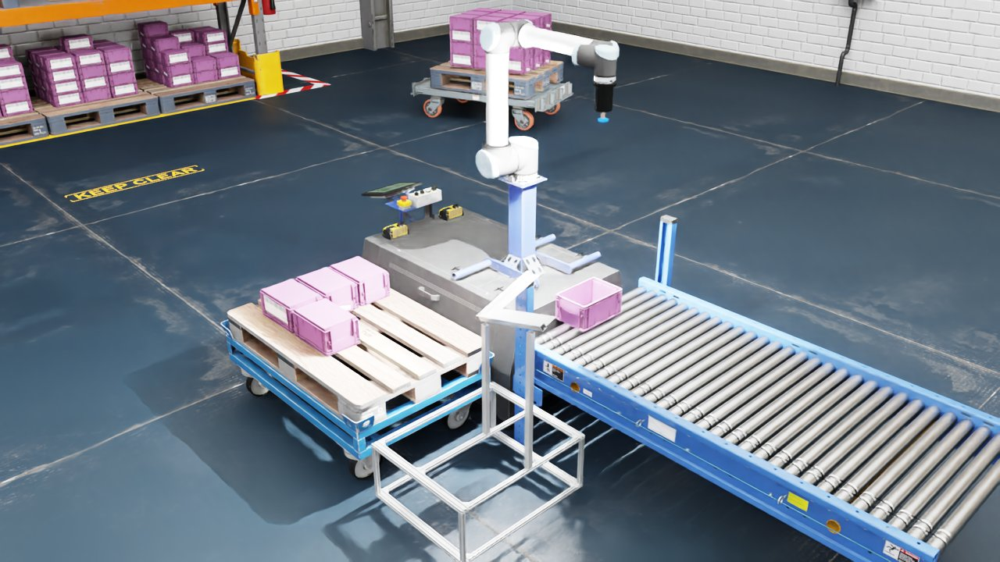
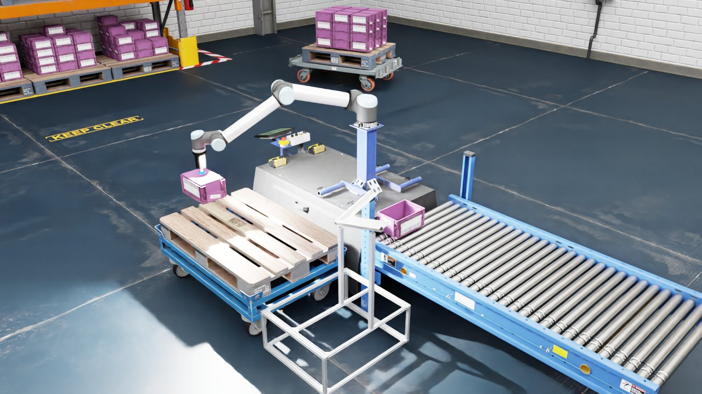

UR10 팔레타이징을
빈 스테이지에서 직접 만들기
Robotics Examples의 UR10 Palletizing이 하는 일을 아홉 단계로 나눠 직접 구현한다. 외부 로봇을 불러오고, 설비를 놓고, 박스를 무작위로 떨어뜨리고, 위치를 읽고, 흡착해서 뒤집고, 팔레트에 쌓는다.
전체 그림
무엇을 만들고, 조각들이 어떻게 맞물리는지 먼저 본다.

셀 배치 (위에서 본 모습)
로봇 베이스가 원점이다. 단위는 m. 박스는 +Y 쪽 입구에서 떨어져 -Y 방향으로 흘러온다. 바닥은 z = -1.18, 로봇은 받침대 위 z = 0에 서 있다.
매 물리 스텝(1/60초)에 일어나는 일
완성본의 주 루프는 이 네 줄이 전부다. 1~8단계는 이 네 줄에 들어갈 부품을 하나씩 만드는 과정이다.
만들 파일
| 단계 | 새로 쓰는 파일 | 실행해서 확인하는 것 |
|---|---|---|
| 0 | palletizing/__init__.py, palletizing/boot.py | 폴더와 실행 방법 |
| 1 | step01_load_robot.py | UR10이 홈 자세로 선다 |
| 2 | palletizing/scene.py (배치), step02_build_scene.py | 설비 7개가 제자리에 놓인다 |
| 3 | scene.py에 컨베이어 함수, step03_conveyor.py | 박스가 1초에 0.30 m 실려 간다 |
| 4 | palletizing/common.py, spawner.py, step04_spawn_bins.py | 박스가 무작위로 계속 나온다 |
| 5 | palletizing/perception.py, step05_perception.py | 집을 점과 뒤집기 여부를 맞힌다 |
| 6 | palletizing/gripper.py, step06_gripper.py | 박스가 붙고, 따라오고, 떨어진다 |
| 7 | palletizing/motion.py, step07_motion.py | 컵 끝이 네 지점에 도착한다 |
| 8 | palletizing/tasks.py, cell.py, step08_pick_place.py | 박스 하나를 팔레트 1번 자리에 놓는다 |
| 9 | palletizing/fsm.py, step09_palletizing.py | 뒤집기를 포함해 9개를 쌓는다 |
0준비
작업 폴더를 만들고, 스크립트를 실행하는 방법과 공통 시작 코드를 갖춘다.
필요한 것
- Isaac Sim 6.2.0. 이 가이드는
C:\isaacsim-6.2에 풀어 놓은 설치본으로 확인했다. 다른 위치면 아래 명령의 경로만 바꾼다. - 인터넷 연결. 로봇·설비 USD를 NVIDIA 에셋 서버에서 내려받는다. 처음 실행은 내려받기와 셰이더 준비 때문에 오래 걸릴 수 있다.
- 편집기 하나(VS Code 등)와 PowerShell.
폴더 만들기
아무 곳에나 작업 폴더를 만들고 그 안에 palletizing 폴더를 만든다. 끝까지 가면 아래 모양이 된다.
IsaacSimUR10Palletizing/ ├─ palletizing/ ← 부품 모듈 (단계마다 하나씩 늘어난다) │ ├─ __init__.py │ ├─ boot.py 0단계 │ ├─ scene.py 2·3단계 │ ├─ common.py 4단계 │ ├─ spawner.py 4단계 │ ├─ perception.py 5단계 │ ├─ gripper.py 6단계 │ ├─ motion.py 7단계 │ ├─ tasks.py 8단계 │ ├─ cell.py 8단계 │ └─ fsm.py 9단계 ├─ step01_load_robot.py ← 단계마다 실행해 보는 스크립트 ├─ … └─ step09_palletizing.py
실행 방법
Isaac Sim 모듈은 Isaac Sim에 들어 있는 Python으로만 불러올 수 있다. 그래서 일반 python이 아니라 설치 폴더의 python.bat으로 실행한다. 가상환경을 따로 만들지 않는다.
cd E:\Github\IsaacSimUR10Palletizing C:\isaacsim-6.2\python.bat step01_load_robot.py
| 옵션 | 뜻 |
|---|---|
(없음) | 창을 띄우고 계속 돈다. 창을 닫으면 끝난다. |
--test --headless | 창 없이 돌리고 스스로 확인한 뒤 [stepNN] PASS 또는 FAIL을 찍고 끝난다. 30초~2분. |
--seed 3 | 무작위 박스 순서를 고정한다. 같은 숫자면 같은 순서로 나온다. |
각 단계는 먼저 창을 띄워 눈으로 보고, 그다음 --test --headless로 PASS를 확인하는 순서를 권한다.
공통 시작 코드
palletizing/__init__.py는 주석 한 줄만 있는 빈 파일이다. 이 파일이 있어야 from palletizing.scene import …처럼 불러올 수 있다.
# UR10 팔레타이징 셀을 기능별 모듈로 나눈 실습 패키지palletizing/boot.py는 2단계부터 모든 스크립트의 첫 줄에서 쓴다. 하는 일은 세 가지다. 앱을 띄우고, 필요한 확장을 켜고, 물리를 60 Hz로 맞춘다.
# Isaac Sim 앱을 띄우고 필요한 확장을 켜는 공통 시작 코드
"""모든 isaacsim.* / pxr import는 SimulationApp을 만든 뒤에만 가능하다. 그래서 이 파일을 맨 먼저 import한다."""
import argparse
import random
from isaacsim import SimulationApp
# 이 실습이 쓰는 확장. 컨베이어, 흡착 그리퍼, 모션 생성(RMPflow), 상태기계.
_EXTENSIONS = [
"isaacsim.asset.gen.conveyor",
"isaacsim.robot.surface_gripper",
"isaacsim.robot_motion.cumotion",
"isaacsim.robot_motion.experimental.motion_generation",
"isaacsim.robot_motion.schema",
"omni.isaac.core_archive", # transitions(상태기계) 패키지가 들어 있다
]
def start_app(extra_config: dict | None = None):
"""인자를 읽고 SimulationApp을 띄운다. (app, args)를 돌려준다."""
parser = argparse.ArgumentParser()
parser.add_argument("--headless", action="store_true", help="창 없이 실행")
parser.add_argument("--test", action="store_true", help="자동 확인 후 종료")
parser.add_argument("--seed", type=int, default=None, help="무작위 박스 위치를 고정")
args, _ = parser.parse_known_args()
config = {"headless": args.headless}
if args.test:
# 화면을 그리지 않아 시험이 빨리 끝난다.
config.update({"renderer": "MinimalRendering", "disable_viewport_updates": True})
config.update(extra_config or {})
app = SimulationApp(config)
import omni.kit.app
manager = omni.kit.app.get_app().get_extension_manager()
for name in _EXTENSIONS:
manager.set_extension_enabled_immediate(name, True)
from isaacsim.core.simulation_manager import SimulationManager
SimulationManager.setup_simulation(dt=1.0 / 60.0, device="cpu") # 물리 60 Hz, CPU
if args.seed is not None:
random.seed(args.seed)
return app, args
def wait_for_assets(app):
"""인터넷에서 받는 USD가 다 열릴 때까지 화면만 갱신한다."""
import isaacsim.core.experimental.utils.stage as stage_utils
app.update()
while stage_utils.is_stage_loading():
app.update()
def finish(app, args, passed: bool, name: str):
"""--test면 결과를 찍고 닫는다. 아니면 창을 닫을 때까지 돌린다."""
if args.test:
print(f"[{name}] {'PASS' if passed else 'FAIL'}", flush=True)
app.close(exit_code=0 if passed else 1)
return
while app.is_running():
app.update()
app.close()SimulationApp(...)을 만들기 전에 isaacsim.core…나 pxr을 import하면 ModuleNotFoundError가 난다. 그래서 모든 스크립트가 start_app()을 먼저 부르고 그 아래에서 나머지를 import한다.1외부 로봇 불러오기
빈 스테이지에 물리·바닥·조명을 넣고, 에셋 서버의 UR10을 불러와 홈 자세로 세운다.
알아 둘 것
- Reference. 로봇 USD 파일을 복사해 넣는 게 아니라, 스테이지의 한 경로(
/World/ur10)에 "이 파일을 여기에 보여 줘"라고 연결한다. 설비와 박스도 전부 같은 방식이다. - Variant. UR10 USD 하나에 여러 형태가 들어 있다.
Gripper는none,short_suction,long_suction중 고른다. 여기서는 짧은 흡착 그리퍼를 쓴다. - Articulation. 관절로 이어진 로봇을 다루는 래퍼다. 관절 이름을 읽고, 관절각을 넣고, 구동기 목표를 준다. 이 UR10은
root_joint로 세계에 고정돼 있어 넘어지지 않는다. - 위치와 목표는 다르다.
set_dof_positions는 관절을 순간 이동시키고,set_dof_position_targets는 구동기가 따라갈 목표를 정한다. 둘을 같이 맞추지 않으면 구동기가 로봇을 예전 목표로 다시 끌고 간다.
코드
이 파일만은 boot.py를 쓰지 않고 전부 풀어 썼다. 번호 순서가 곧 Isaac Sim standalone 스크립트의 뼈대다.
# 1단계: 빈 스테이지에 물리를 켜고 외부 UR10 로봇을 불러와 홈 자세로 세운다
"""실행: C:\\isaacsim-6.2\\python.bat step01_load_robot.py
이 파일만은 공통 코드(palletizing/boot.py) 없이 전부 풀어 썼다. Isaac Sim 스크립트의 뼈대를 한 번 보기 위함이다.
"""
import argparse
# (1) 앱부터 띄운다. 이 줄보다 위에서 isaacsim.* 나 pxr 을 import 하면 실패한다.
from isaacsim import SimulationApp
parser = argparse.ArgumentParser()
parser.add_argument("--headless", action="store_true")
parser.add_argument("--test", action="store_true")
args, _ = parser.parse_known_args()
simulation_app = SimulationApp({"headless": args.headless})
# (2) 앱이 뜬 뒤에 나머지를 import 한다.
import isaacsim.core.experimental.utils.app as app_utils
import isaacsim.core.experimental.utils.stage as stage_utils
import numpy as np
from isaacsim.core.experimental.objects import DomeLight, GroundPlane
from isaacsim.core.experimental.prims import Articulation, XformPrim
from isaacsim.core.simulation_manager import SimulationManager
from isaacsim.storage.native import get_assets_root_path
# (3) 물리 설정. 1/60초마다 한 스텝, CPU에서 계산.
SimulationManager.setup_simulation(dt=1.0 / 60.0, device="cpu")
# (4) 바닥과 조명.
GroundPlane("/World/Ground")
DomeLight("/World/DomeLight").set_intensities(1000)
# (5) 외부 로봇 불러오기. USD 파일을 "reference"로 스테이지의 한 경로에 붙인다.
# variants 로 흡착 그리퍼가 달린 형태를 고른다. (Gripper: none / short_suction / long_suction)
ROBOT_PATH = "/World/ur10"
ur10_usd = get_assets_root_path() + "/Isaac/Robots_Multiphysics/UniversalRobots/ur10/ur10.usda"
stage_utils.add_reference_to_stage(usd_path=ur10_usd, path=ROBOT_PATH, variants=[("Gripper", "short_suction")])
XformPrim(ROBOT_PATH, translations=[(0.0, 0.0, 0.0)], reset_xform_op_properties=True)
# (6) 인터넷에서 받는 중이면 다 열릴 때까지 기다린다.
simulation_app.update()
while stage_utils.is_stage_loading():
simulation_app.update()
# (7) 관절 로봇으로 다루기 위한 래퍼. 홈 자세(라디안)를 기본 상태로 등록한다.
HOME = np.array([-1.57, -1.57, -1.57, -1.57, 1.57, 0.0])
robot = Articulation(ROBOT_PATH)
robot.set_default_state(dof_positions=[HOME])
# (8) 재생(Play)을 누른 것과 같다. 물리가 돌기 시작한다.
app_utils.play()
for _ in range(10):
simulation_app.update()
print("관절 이름:", robot.dof_names)
print("링크 이름:", robot.link_names)
# (9) 홈 자세로 순간 이동시키고, 구동기 목표도 같은 값으로 맞춘다.
# 목표를 안 맞추면 구동기가 예전 목표(0)로 다시 끌고 간다.
robot.set_dof_positions(HOME.tolist())
robot.set_dof_position_targets(HOME.tolist())
for _ in range(120): # 2초
simulation_app.update()
q = robot.get_dof_positions().numpy()[0]
print("현재 관절각(rad):", np.round(q, 3))
passed = len(robot.dof_names) == 6 and np.allclose(q, HOME, atol=0.02)
if args.test:
print(f"[step01] {'PASS' if passed else 'FAIL'}", flush=True)
else:
while simulation_app.is_running(): # 창을 닫을 때까지
simulation_app.update()
simulation_app.close()실행과 기대 결과
C:\isaacsim-6.2\python.bat step01_load_robot.py
창에 UR10이 팔을 접은 홈 자세로 서 있으면 된다. --test --headless를 붙이면 아래가 찍힌다.
관절 이름: ['shoulder_pan_joint', 'shoulder_lift_joint', 'elbow_joint', 'wrist_1_joint', 'wrist_2_joint', 'wrist_3_joint'] 링크 이름: ['base_link', 'shoulder_link', 'upper_arm_link', 'forearm_link', 'wrist_1_link', 'wrist_2_link', 'wrist_3_link', 'ee_link'] 현재 관절각(rad): [-1.57 -1.57 -1.57 -1.57 1.57 -0. ] [step01] PASS
variants를 [("Gripper", "none")]이나 long_suction으로 바꿔 실행해 본다. 같은 파일에서 끝단 모양이 달라진다.2설비 배치
로봇 주변에 받침대, 하우징, 컨베이어, 뒤집기 장치, 팔레트, 대차를 놓는다.
알아 둘 것
- 자세는 쿼터니언
(w, x, y, z).(0.7071, 0, 0, -0.7071)은 Z축 둘레 -90도,(0.7071, 0, 0, 0.7071)은 +90도다. 이 두 값만 쓴다. - 충돌 그룹. 로봇은 하우징 안쪽에 서 있다. 둘을 서로 충돌 계산에서 빼지 않으면 팔이 하우징에 걸려 움직이지 못한다.
- 보이지 않는 바닥. 창고 배경은 그림일 뿐 물리가 없다. 떨어진 박스를 받칠 물리 바닥을
z = -1.18에 따로 깐다. - 배치 좌표는 공식 예제의 값이다. 로봇이 닿을 수 있는 범위와 뒤 단계의 목표 좌표가 이 배치에 맞춰져 있으니 처음에는 그대로 쓴다.
코드: palletizing/scene.py (배치 부분)
파일 머리와 상수, 에셋 주소, 붙이기 도우미, 배치 함수를 차례로 쓴다. 컨베이어 관련 함수 세 개(_keep_rollers_kinematic, configure_conveyor, set_conveyor_running)는 3단계에서 설명한다. 미리 같이 써 두어도 된다.
ENV_PATH = "/World/Cell" # 셀 전체를 담는 상위 경로def asset_urls() -> dict[str, str]:
"""에셋 서버에 있는 USD 주소 모음."""
root = get_assets_root_path()
if root is None:
raise RuntimeError("에셋 서버를 찾지 못했다. 인터넷 연결을 확인한다.")
return {
"ur10": root + "/Isaac/Robots_Multiphysics/UniversalRobots/ur10/ur10.usda",
"mount": root + "/Isaac/Props/Mounts/ur10_mount.usd",
"housing": root + "/Isaac/Props/Sortbot_Housing/sortbot_housing.usd",
"conveyor": root + "/Isaac/Props/Conveyors/ConveyorBelt_A05.usd",
"flip_station": root + "/Isaac/Props/Flip_Stack/flip_stack.usd",
"pallet": root + "/Isaac/Props/Pallet/pallet.usd",
"dolly": root + "/Isaac/Props/Dolly/dolly.usd",
"bin": root + "/Isaac/Props/KLT_Bin/small_KLT.usd",
"warehouse": root + "/Isaac/Environments/Simple_Warehouse/warehouse.usd",
}def add_usd(usd_path, prim_path, translation, orientation=(1.0, 0.0, 0.0, 0.0), variants=None):
"""USD 파일을 prim_path에 reference로 붙이고 위치·자세를 정한다."""
stage_utils.add_reference_to_stage(usd_path=usd_path, path=prim_path, variants=variants)
XformPrim(prim_path, translations=[translation], orientations=[orientation], reset_xform_op_properties=True)def build_scene(env_path: str = ENV_PATH) -> dict[str, str]:
"""셀을 만든다. 쓰인 에셋 주소 dict를 돌려준다(박스 생성기가 다시 쓴다)."""
urls = asset_urls()
stage = stage_utils.get_current_stage(backend="usd")
stage_utils.define_prim(env_path)
# 컨베이어. 불러오는 것과 kinematic 지정을 한 묶음으로 처리한다(아래 함수 설명 참고).
stage.DefinePrim(f"{env_path}/conveyor", "Xform")
with Sdf.ChangeBlock():
add_usd(urls["conveyor"], f"{env_path}/conveyor", (-0.0544, 2.409, -1.4), _Z_ROT_M90)
_keep_rollers_kinematic(stage, f"{env_path}/conveyor/Rollers")
# 뒤집기 장치, 팔레트, 팔레트 대차.
add_usd(urls["flip_station"], f"{env_path}/flip_station", (0.9087, 0.6629, -0.9453), _Z_ROT_M90)
add_usd(urls["pallet"], f"{env_path}/pallet", (0.8826, -0.3281, -0.8098), _Z_ROT_P90)
add_usd(urls["dolly"], f"{env_path}/dolly", (0.8875, -0.3329, -1.1811))
# 로봇 받침대, 로봇을 둘러싼 하우징, 로봇.
add_usd(urls["mount"], f"{env_path}/ur10_mount", (0.0, 0.0, 0.0))
add_usd(urls["housing"], f"{env_path}/housing", (-0.018, -0.282, -1.175))
add_usd(urls["ur10"], f"{env_path}/ur10", (0.0, 0.0, 0.0), variants=[("Gripper", "short_suction")])
# 보이지 않는 물리 바닥. 떨어진 박스가 끝없이 추락하지 않게 한다.
ground = GroundPlane(f"{env_path}/ground", sizes=50.0, translations=[(0.0, 0.0, -1.1819)], templates=None)
ground.set_visibilities(False)
# 로봇과 하우징은 서로 충돌 계산에서 뺀다. 로봇이 하우징 안쪽에 서 있어서 그대로 두면 끼인다.
robot_group = UsdPhysics.CollisionGroup.Define(stage, f"{env_path}/RobotGroup")
robot_group.GetCollidersCollectionAPI().CreateIncludesRel().AddTarget(Sdf.Path(f"{env_path}/ur10"))
housing_group = UsdPhysics.CollisionGroup.Define(stage, f"{env_path}/HousingGroup")
housing_group.GetCollidersCollectionAPI().CreateIncludesRel().AddTarget(Sdf.Path(f"{env_path}/housing"))
robot_group.CreateFilteredGroupsRel().AddTarget(housing_group.GetPrim().GetPath())
# 배경(창고)과 조명. 물리와는 무관하다.
stage_utils.add_reference_to_stage(usd_path=urls["warehouse"], path="/World/Background")
XformPrim("/World/Background", positions=[10.0, 2.0, -1.1818], orientations=[_Z_ROT_P90], reset_xform_op_properties=True)
light = DistantLight("/World/DistantLight", angles=np.deg2rad(1.0), orientations=[(0.9238795, 0.0, 0.3826834, 0.0)])
light.set_intensities(3000)
return urlsscene.py 전체 보기 (import와 3단계 함수 포함)
# 팔레타이징 셀의 설비(로봇, 컨베이어, 뒤집기 장치, 팔레트)를 배치하고 컨베이어를 구동한다
"""좌표 기준: 로봇 베이스가 원점(0,0,0), 단위는 m, 회전은 쿼터니언 (w, x, y, z).
+Y 컨베이어가 박스를 싣고 오는 쪽 (박스는 -Y 방향으로 흘러온다)
+X 뒤집기 장치와 팔레트가 있는 쪽
바닥은 z = -1.18 (로봇은 받침대 위에 서 있다)
"""
import isaacsim.core.experimental.utils.stage as stage_utils
import numpy as np
from isaacsim.asset.gen.conveyor import create_conveyor_belt
from isaacsim.core.experimental.objects import DistantLight, GroundPlane
from isaacsim.core.experimental.prims import XformPrim
from isaacsim.storage.native import get_assets_root_path
from pxr import Gf, Sdf, Usd, UsdGeom, UsdPhysics
ENV_PATH = "/World/Cell" # 셀 전체를 담는 상위 경로
ROBOT_PATH = f"{ENV_PATH}/ur10"
CONVEYOR_SPEED = 0.30 # m/s
_Z_ROT_M90 = (0.7071068, 0.0, 0.0, -0.7071068) # Z축 -90도
_Z_ROT_P90 = (0.7071068, 0.0, 0.0, 0.7071068) # Z축 +90도
def asset_urls() -> dict[str, str]:
"""에셋 서버에 있는 USD 주소 모음."""
root = get_assets_root_path()
if root is None:
raise RuntimeError("에셋 서버를 찾지 못했다. 인터넷 연결을 확인한다.")
return {
"ur10": root + "/Isaac/Robots_Multiphysics/UniversalRobots/ur10/ur10.usda",
"mount": root + "/Isaac/Props/Mounts/ur10_mount.usd",
"housing": root + "/Isaac/Props/Sortbot_Housing/sortbot_housing.usd",
"conveyor": root + "/Isaac/Props/Conveyors/ConveyorBelt_A05.usd",
"flip_station": root + "/Isaac/Props/Flip_Stack/flip_stack.usd",
"pallet": root + "/Isaac/Props/Pallet/pallet.usd",
"dolly": root + "/Isaac/Props/Dolly/dolly.usd",
"bin": root + "/Isaac/Props/KLT_Bin/small_KLT.usd",
"warehouse": root + "/Isaac/Environments/Simple_Warehouse/warehouse.usd",
}
def add_usd(usd_path, prim_path, translation, orientation=(1.0, 0.0, 0.0, 0.0), variants=None):
"""USD 파일을 prim_path에 reference로 붙이고 위치·자세를 정한다."""
stage_utils.add_reference_to_stage(usd_path=usd_path, path=prim_path, variants=variants)
XformPrim(prim_path, translations=[translation], orientations=[orientation], reset_xform_op_properties=True)
def build_scene(env_path: str = ENV_PATH) -> dict[str, str]:
"""셀을 만든다. 쓰인 에셋 주소 dict를 돌려준다(박스 생성기가 다시 쓴다)."""
urls = asset_urls()
stage = stage_utils.get_current_stage(backend="usd")
stage_utils.define_prim(env_path)
# 컨베이어. 불러오는 것과 kinematic 지정을 한 묶음으로 처리한다(아래 함수 설명 참고).
stage.DefinePrim(f"{env_path}/conveyor", "Xform")
with Sdf.ChangeBlock():
add_usd(urls["conveyor"], f"{env_path}/conveyor", (-0.0544, 2.409, -1.4), _Z_ROT_M90)
_keep_rollers_kinematic(stage, f"{env_path}/conveyor/Rollers")
# 뒤집기 장치, 팔레트, 팔레트 대차.
add_usd(urls["flip_station"], f"{env_path}/flip_station", (0.9087, 0.6629, -0.9453), _Z_ROT_M90)
add_usd(urls["pallet"], f"{env_path}/pallet", (0.8826, -0.3281, -0.8098), _Z_ROT_P90)
add_usd(urls["dolly"], f"{env_path}/dolly", (0.8875, -0.3329, -1.1811))
# 로봇 받침대, 로봇을 둘러싼 하우징, 로봇.
add_usd(urls["mount"], f"{env_path}/ur10_mount", (0.0, 0.0, 0.0))
add_usd(urls["housing"], f"{env_path}/housing", (-0.018, -0.282, -1.175))
add_usd(urls["ur10"], f"{env_path}/ur10", (0.0, 0.0, 0.0), variants=[("Gripper", "short_suction")])
# 보이지 않는 물리 바닥. 떨어진 박스가 끝없이 추락하지 않게 한다.
ground = GroundPlane(f"{env_path}/ground", sizes=50.0, translations=[(0.0, 0.0, -1.1819)], templates=None)
ground.set_visibilities(False)
# 로봇과 하우징은 서로 충돌 계산에서 뺀다. 로봇이 하우징 안쪽에 서 있어서 그대로 두면 끼인다.
robot_group = UsdPhysics.CollisionGroup.Define(stage, f"{env_path}/RobotGroup")
robot_group.GetCollidersCollectionAPI().CreateIncludesRel().AddTarget(Sdf.Path(f"{env_path}/ur10"))
housing_group = UsdPhysics.CollisionGroup.Define(stage, f"{env_path}/HousingGroup")
housing_group.GetCollidersCollectionAPI().CreateIncludesRel().AddTarget(Sdf.Path(f"{env_path}/housing"))
robot_group.CreateFilteredGroupsRel().AddTarget(housing_group.GetPrim().GetPath())
# 배경(창고)과 조명. 물리와는 무관하다.
stage_utils.add_reference_to_stage(usd_path=urls["warehouse"], path="/World/Background")
XformPrim("/World/Background", positions=[10.0, 2.0, -1.1818], orientations=[_Z_ROT_P90], reset_xform_op_properties=True)
light = DistantLight("/World/DistantLight", angles=np.deg2rad(1.0), orientations=[(0.9238795, 0.0, 0.3826834, 0.0)])
light.set_intensities(3000)
return urls
def _keep_rollers_kinematic(stage: Usd.Stage, rollers_path: str) -> None:
"""롤러를 kinematic(물리에 밀리지 않는 강체)으로 미리 적어 둔다.
컨베이어는 "움직이지 않지만 표면 속도를 가진 강체"여야 한다. reference가 열리기 전에
이 값을 적어 두지 않으면 롤러가 일반 강체로 읽혀 아래로 떨어진다.
"""
layer = stage.GetEditTarget().GetLayer()
spec = Sdf.CreatePrimInLayer(layer, stage.GetEditTarget().MapToSpecPath(Sdf.Path(rollers_path)))
attr = Sdf.AttributeSpec(spec, "physics:kinematicEnabled", Sdf.ValueTypeNames.Bool, Sdf.VariabilityUniform)
attr.default = True
def configure_conveyor(env_path: str = ENV_PATH) -> None:
"""에셋이 다 열린 뒤 호출한다. 롤러에 컨베이어 동작(표면 속도)을 붙인다."""
stage = stage_utils.get_current_stage(backend="usd")
rollers = stage.GetPrimAtPath(f"{env_path}/conveyor/Rollers")
if not rollers.IsValid() or not any(p.IsA(UsdGeom.Mesh) for p in Usd.PrimRange(rollers)):
raise RuntimeError("컨베이어 롤러가 아직 열리지 않았다. wait_for_assets 뒤에 호출한다.")
# 액션 그래프(OnTick → ConveyorNode)를 만들어 준다. 매 프레임 롤러의 표면 속도를 갱신한다.
node = create_conveyor_belt(stage, rollers)
node.GetAttribute("inputs:direction").Set(Gf.Vec3f(1.0, 0.0, 0.0)) # 컨베이어 로컬 +X = 월드 -Y
node.GetAttribute("inputs:animateTexture").Set(True) # 벨트 무늬가 흘러가 보이게
node.GetAttribute("inputs:animateDirection").Set(Gf.Vec2f(0.0, 1.0))
node.GetAttribute("inputs:animateScale").Set(0.01)
set_conveyor_running(True, env_path)
def set_conveyor_running(running: bool, env_path: str = ENV_PATH) -> None:
"""컨베이어를 돌리거나 세운다. 그래프 변수 Velocity 하나만 바꾸면 된다."""
stage = stage_utils.get_current_stage(backend="usd")
velocity = stage.GetPrimAtPath(f"{env_path}/conveyor/ConveyorBeltGraph").GetAttribute("graph:variable:Velocity")
if velocity.IsValid():
velocity.Set(CONVEYOR_SPEED if running else 0.0)코드: step02_build_scene.py
# 2단계: 로봇 주변에 컨베이어, 뒤집기 장치, 팔레트 등 설비를 배치한다
"""실행: C:\\isaacsim-6.2\\python.bat step02_build_scene.py"""
from palletizing.boot import finish, start_app, wait_for_assets
app, args = start_app()
import isaacsim.core.experimental.utils.app as app_utils
import isaacsim.core.experimental.utils.stage as stage_utils
from pxr import Usd, UsdGeom
from palletizing.scene import ENV_PATH, build_scene
build_scene()
wait_for_assets(app)
# 배치한 설비가 실제로 어디에 얼마만 한 크기로 놓였는지 찍어 본다.
stage = stage_utils.get_current_stage(backend="usd")
bbox = UsdGeom.BBoxCache(Usd.TimeCode.Default(), ["default"])
passed = True
for name in ["ur10", "ur10_mount", "housing", "conveyor", "flip_station", "pallet", "dolly"]:
prim = stage.GetPrimAtPath(f"{ENV_PATH}/{name}")
box = bbox.ComputeWorldBound(prim).ComputeAlignedRange()
lo, hi = box.GetMin(), box.GetMax()
print(f"{name:13s} x[{lo[0]:+.2f},{hi[0]:+.2f}] y[{lo[1]:+.2f},{hi[1]:+.2f}] z[{lo[2]:+.2f},{hi[2]:+.2f}]")
passed = passed and prim.IsValid() and not box.IsEmpty()
app_utils.play()
finish(app, args, passed, "step02")실행과 기대 결과
C:\isaacsim-6.2\python.bat step02_build_scene.py
ur10 x[-0.09,+1.23] y[-0.08,+0.26] z[-0.05,+0.22] ur10_mount x[-0.14,+0.14] y[-0.14,+0.14] z[-0.52,+0.00] housing x[-0.48,+0.49] y[-1.27,+0.38] z[-1.18,+0.04] conveyor x[-0.63,+0.52] y[+0.41,+2.41] z[-1.40,-0.23] flip_station x[+0.54,+1.29] y[+0.37,+1.02] z[-1.11,-0.10] pallet x[+0.48,+1.28] y[-0.93,+0.28] z[-0.81,-0.67] dolly x[+0.46,+1.31] y[-0.96,+0.30] z[-1.18,-0.74] [step02] PASS
찍힌 범위가 위 평면도와 맞는지 대조해 본다. (이 시점의 로봇은 아직 팔을 뻗은 0도 자세라 x가 1.23까지 나온다.)

3컨베이어 구동
컨베이어를 돌리고 세운다. 박스 하나를 올려 실제로 실려 가는지 잰다.
알아 둘 것
- 컨베이어는 움직이지 않는다. 롤러는 제자리에 있는 kinematic 강체이고, 표면에 닿은 물체를 일정 속도로 밀어 주는 표면 속도만 가진다. 그래서 박스가 실려 간다.
create_conveyor_belt가 액션 그래프(ConveyorBeltGraph)를 만들어 준다. 매 프레임 그래프 변수Velocity를 읽어 표면 속도에 넣는다. 돌리고 세우는 것은 이 변수 하나를 0.30과 0 사이에서 바꾸는 일이다.- 순서가 중요하다. 롤러를 kinematic으로 지정하는 것은 reference를 붙이는 것과 한 묶음(
Sdf.ChangeBlock)으로 하고,configure_conveyor()는 에셋이 다 열린 뒤에 부른다.
코드: scene.py의 컨베이어 함수
def _keep_rollers_kinematic(stage: Usd.Stage, rollers_path: str) -> None:
"""롤러를 kinematic(물리에 밀리지 않는 강체)으로 미리 적어 둔다.
컨베이어는 "움직이지 않지만 표면 속도를 가진 강체"여야 한다. reference가 열리기 전에
이 값을 적어 두지 않으면 롤러가 일반 강체로 읽혀 아래로 떨어진다.
"""
layer = stage.GetEditTarget().GetLayer()
spec = Sdf.CreatePrimInLayer(layer, stage.GetEditTarget().MapToSpecPath(Sdf.Path(rollers_path)))
attr = Sdf.AttributeSpec(spec, "physics:kinematicEnabled", Sdf.ValueTypeNames.Bool, Sdf.VariabilityUniform)
attr.default = Truedef configure_conveyor(env_path: str = ENV_PATH) -> None:
"""에셋이 다 열린 뒤 호출한다. 롤러에 컨베이어 동작(표면 속도)을 붙인다."""
stage = stage_utils.get_current_stage(backend="usd")
rollers = stage.GetPrimAtPath(f"{env_path}/conveyor/Rollers")
if not rollers.IsValid() or not any(p.IsA(UsdGeom.Mesh) for p in Usd.PrimRange(rollers)):
raise RuntimeError("컨베이어 롤러가 아직 열리지 않았다. wait_for_assets 뒤에 호출한다.")
# 액션 그래프(OnTick → ConveyorNode)를 만들어 준다. 매 프레임 롤러의 표면 속도를 갱신한다.
node = create_conveyor_belt(stage, rollers)
node.GetAttribute("inputs:direction").Set(Gf.Vec3f(1.0, 0.0, 0.0)) # 컨베이어 로컬 +X = 월드 -Y
node.GetAttribute("inputs:animateTexture").Set(True) # 벨트 무늬가 흘러가 보이게
node.GetAttribute("inputs:animateDirection").Set(Gf.Vec2f(0.0, 1.0))
node.GetAttribute("inputs:animateScale").Set(0.01)
set_conveyor_running(True, env_path)def set_conveyor_running(running: bool, env_path: str = ENV_PATH) -> None:
"""컨베이어를 돌리거나 세운다. 그래프 변수 Velocity 하나만 바꾸면 된다."""
stage = stage_utils.get_current_stage(backend="usd")
velocity = stage.GetPrimAtPath(f"{env_path}/conveyor/ConveyorBeltGraph").GetAttribute("graph:variable:Velocity")
if velocity.IsValid():
velocity.Set(CONVEYOR_SPEED if running else 0.0)코드: step03_conveyor.py
박스 USD(small_KLT.usd)는 이미 질량 0.56 kg의 강체로 만들어져 있다. reference로 붙이고 RigidPrim으로 감싸면 위치를 읽고 쓸 수 있다.
# 3단계: 컨베이어를 구동하고 박스 하나를 올려 실려 가는지 본다
"""실행: C:\\isaacsim-6.2\\python.bat step03_conveyor.py"""
from palletizing.boot import finish, start_app, wait_for_assets
app, args = start_app()
import isaacsim.core.experimental.utils.app as app_utils
import isaacsim.core.experimental.utils.stage as stage_utils
from isaacsim.core.experimental.prims import RigidPrim
from palletizing.scene import ENV_PATH, build_scene, configure_conveyor, set_conveyor_running
urls = build_scene()
wait_for_assets(app)
configure_conveyor() # 에셋이 다 열린 뒤에 불러야 한다
# 박스 하나를 컨베이어 입구 위에 놓는다. 박스 USD는 이미 강체(RigidBody)로 만들어져 있다.
BIN_PATH = f"{ENV_PATH}/bins/test_bin"
stage_utils.add_reference_to_stage(usd_path=urls["bin"], path=BIN_PATH)
test_bin = RigidPrim(BIN_PATH, positions=[(0.0, 1.5, -0.15)], reset_xform_op_properties=True)
wait_for_assets(app)
app_utils.play()
def run_seconds(seconds: float) -> float:
"""seconds 동안 시뮬레이션을 돌리고 박스의 y 위치를 돌려준다."""
for _ in range(int(seconds * 60)):
app.update()
return float(test_bin.get_world_poses()[0].numpy()[0][1])
y0 = run_seconds(0.5) # 떨어져서 벨트에 앉을 시간
y1 = run_seconds(1.0)
print(f"구동 1초: y {y0:.3f} → {y1:.3f} (이동 {y0 - y1:.3f} m, 기대값 약 0.30)")
set_conveyor_running(False)
y2 = run_seconds(0.5) # 멈추는 중
y3 = run_seconds(1.0)
print(f"정지 1초: y {y2:.3f} → {y3:.3f} (이동 {y2 - y3:.3f} m, 기대값 약 0)")
set_conveyor_running(True)
passed = 0.2 < (y0 - y1) < 0.4 and abs(y2 - y3) < 0.02
finish(app, args, passed, "step03")실행과 기대 결과
C:\isaacsim-6.2\python.bat step03_conveyor.py
구동 1초: y 1.428 → 1.128 (이동 0.300 m, 기대값 약 0.30) 정지 1초: y 1.114 → 1.114 (이동 0.000 m, 기대값 약 0) [step03] PASS
scene.py의 CONVEYOR_SPEED를 0.6으로 바꾸면 이동 거리가 두 배가 된다. 확인하고 0.30으로 되돌린다.4무작위 박스 만들기
컨베이어 입구에 박스를 무작위 위치·방향으로 하나씩 만들어 낸다. 절반은 엎어서 내보낸다.
알아 둘 것
- 무작위 요소 세 가지. 폭 방향 위치
x(±0.15 m), 수직축 둘레 회전(±180도), 엎어졌는지(확률 50%). - 박스의 z축.
small_KLT는 로컬 z축이 바닥에서 입구로 향한다. Y축으로 180도 돌리면 입구가 아래로 간다. 5단계의 "뒤집기 필요" 판정이 이 z축을 본다. - 만드는 시점. 컨베이어 구역(
y > 0,|x| < 0.4)에 박스가 있으면 기다린다. 로봇이 박스를 들고 구역 밖으로 나가는 순간 다음 박스가 나온다. - USD 위치와 물리 위치.
RigidPrim(...)에 준 위치는 USD에 적히고,set_world_poses는 물리 엔진의 위치를 바꾼다. 재생 중에 새로 만든 박스는 두 쪽을 같은 값으로 맞춘다.
코드: palletizing/common.py
여러 모듈이 함께 쓰는 자세 계산 도구다. 이 단계에서는 rigid_pose만 쓰지만 한 번에 써 둔다.
# 위치·자세 계산에 쓰는 작은 수학 도구 모음
"""자세 표현 두 가지를 오간다.
쿼터니언 q = (w, x, y, z) Isaac Sim이 주고받는 형식
4x4 변환행렬 T 왼쪽 위 3x3이 회전 R, 오른쪽 열이 위치 p
R의 1·2·3번째 열이 그 물체의 x·y·z축이 월드에서 향하는 방향이다.
"""
import isaacsim.core.experimental.utils.stage as stage_utils
import numpy as np
from pxr import Usd, UsdGeom
from scipy.spatial.transform import Rotation
def quat_to_matrix(q) -> np.ndarray:
"""(w,x,y,z) → 3x3 회전행렬. scipy는 (x,y,z,w) 순서라 자리를 바꿔 넣는다."""
return Rotation.from_quat(np.asarray(q)[[1, 2, 3, 0]]).as_matrix()
def matrix_to_quat(R) -> np.ndarray:
"""3x3 회전행렬 → (w,x,y,z)."""
return Rotation.from_matrix(R).as_quat()[[3, 0, 1, 2]]
def make_T(p, R) -> np.ndarray:
"""위치 p와 회전 R로 4x4 변환행렬을 만든다."""
T = np.eye(4)
T[:3, :3] = R
T[:3, 3] = p
return T
def read_world_pose(prim_path: str):
"""USD에서 prim의 월드 위치와 쿼터니언을 읽는다. 강체가 아닌 하위 prim도 읽을 수 있다."""
stage = stage_utils.get_current_stage(backend="usd")
xform = UsdGeom.Xformable(stage.GetPrimAtPath(prim_path)).ComputeLocalToWorldTransform(Usd.TimeCode.Default())
xform.Orthonormalize() # 스케일을 떼어 내고 순수 회전만 남긴다
q = xform.ExtractRotationQuat()
return np.array(xform.ExtractTranslation(), dtype=float), np.array([q.GetReal(), *q.GetImaginary()], dtype=float)
def rigid_pose(rigid_prim):
"""RigidPrim의 월드 위치와 쿼터니언을 물리 엔진에서 읽는다."""
positions, orientations = rigid_prim.get_world_poses()
return np.asarray(positions.numpy()[0], dtype=float), np.asarray(orientations.numpy()[0], dtype=float)
def transforms_close(T1, T2, p_thresh: float, R_thresh: float) -> bool:
"""두 자세가 위치 p_thresh(m), 회전 R_thresh 이내로 가까운가."""
diff = T1 - T2
return bool(np.linalg.norm(diff[:3, 3]) <= p_thresh and np.linalg.norm(diff[:3, :3]) / 3 <= R_thresh)코드: palletizing/spawner.py
# 컨베이어 입구에 박스를 무작위 위치·자세로 하나씩 만들어 내는 생성기
import random
import isaacsim.core.experimental.utils.stage as stage_utils
import numpy as np
from isaacsim.core.experimental.prims import RigidPrim
from scipy.spatial.transform import Rotation
from palletizing.common import rigid_pose
from palletizing.scene import CONVEYOR_SPEED, ENV_PATH
def random_bin_pose(upside_down_probability: float = 0.5):
"""박스가 떨어질 무작위 위치와 자세를 만든다. (위치, 쿼터니언, 엎어졌는지)를 돌려준다."""
# 컨베이어 폭 방향(x)으로 ±15 cm 흩뜨리고, 입구(y=1.5) 위 살짝 뜬 높이에서 떨어뜨린다.
position = np.array([random.uniform(-0.15, 0.15), 1.5, -0.15])
# 수직축 둘레로 아무 각도나.
rotation = Rotation.from_euler("z", random.uniform(-np.pi, np.pi))
# 절반은 엎어서(입구가 아래로) 내보낸다.
upside_down = random.random() < upside_down_probability
if upside_down:
rotation = rotation * Rotation.from_euler("y", np.pi)
return position, rotation.as_quat()[[3, 0, 1, 2]], upside_down
class BinSpawner:
"""작업 구역이 비면 새 박스를 하나 만든다."""
def __init__(self, bin_usd: str, env_path: str = ENV_PATH, upside_down_probability: float = 0.5):
self.bin_usd = bin_usd
self.env_path = env_path
self.upside_down_probability = upside_down_probability
self.bins: list[RigidPrim] = [] # 지금까지 만든 박스 전부
self.on_conveyor: RigidPrim | None = None # 컨베이어 위에 있는 가장 최근 박스
self.upside_down_log: list[bool] = [] # 만들 때 엎었는지 기록(인식 결과를 검산할 정답지)
def step(self) -> None:
"""매 물리 스텝마다 부른다. 컨베이어 위 박스가 아직 있으면 아무것도 안 한다."""
if self.on_conveyor is not None:
x, y, _ = rigid_pose(self.on_conveyor)[0]
if y > 0.0 and -0.4 < x < 0.4: # 아직 컨베이어 구역 안
return
prim_path = f"{self.env_path}/bins/bin_{len(self.bins)}"
position, orientation, upside_down = random_bin_pose(self.upside_down_probability)
print(f"<박스 생성 {prim_path.split('/')[-1]}: x={position[0]:+.3f}, {'엎어짐' if upside_down else '바로 놓임'}>")
stage_utils.add_reference_to_stage(usd_path=self.bin_usd, path=prim_path)
rigid_bin = RigidPrim(prim_path, positions=[position], orientations=[orientation], reset_xform_op_properties=True)
# 물리 엔진 쪽 위치도 같은 값으로 맞추고, 컨베이어와 같은 속도를 미리 줘서 미끄러짐을 줄인다.
rigid_bin.set_world_poses(positions=[position], orientations=[orientation])
rigid_bin.set_velocities(linear_velocities=[[0.0, -CONVEYOR_SPEED, 0.0]])
self.on_conveyor = rigid_bin
self.bins.append(rigid_bin)
self.upside_down_log.append(upside_down)
def reset(self) -> None:
"""만든 박스를 모두 지운다."""
stage = stage_utils.get_current_stage(backend="usd")
for rigid_bin in self.bins:
if stage.GetPrimAtPath(rigid_bin.paths[0]).IsValid():
stage_utils.delete_prim(rigid_bin.paths[0])
self.bins.clear()
self.upside_down_log.clear()
self.on_conveyor = None코드: step04_spawn_bins.py
아직 로봇이 박스를 집지 못하므로, 박스가 작업 구역에 닿으면 스크립트가 옆으로 치운다.
# 4단계: 박스를 무작위 위치·자세로 계속 만들어 컨베이어에 올린다
"""실행: C:\\isaacsim-6.2\\python.bat step04_spawn_bins.py --seed 3
아직 로봇이 박스를 집지 않으므로, 박스가 작업 구역(y < 0.7)에 들어오면 옆으로 치워서
다음 박스가 나오게 한다. 이 "치우기"가 뒤 단계에서 로봇이 할 일이다.
"""
from palletizing.boot import finish, start_app, wait_for_assets
app, args = start_app()
import isaacsim.core.experimental.utils.app as app_utils
from palletizing.common import rigid_pose
from palletizing.scene import build_scene, configure_conveyor
from palletizing.spawner import BinSpawner
urls = build_scene()
wait_for_assets(app)
configure_conveyor()
spawner = BinSpawner(urls["bin"])
app_utils.play()
removed = 0
MAX_BINS = 3 if args.test else 1000
while app.is_running() and removed < MAX_BINS:
app.update()
if not app_utils.is_playing():
continue
spawner.step() # 구역이 비었으면 새 박스를 만든다
position, _ = rigid_pose(spawner.on_conveyor)
if position[1] < 0.7: # 작업 구역 도착
print(f" 도착 위치 x={position[0]:+.3f}, y={position[1]:.3f}, z={position[2]:.3f} → 치움")
spawner.on_conveyor.set_world_poses(positions=[(3.0 + removed, 1.0, -0.9)])
spawner.on_conveyor.set_velocities(linear_velocities=[[0.0, 0.0, 0.0]])
removed += 1
finish(app, args, len(spawner.bins) == removed == MAX_BINS, "step04")실행과 기대 결과
C:\isaacsim-6.2\python.bat step04_spawn_bins.py --seed 3
<박스 생성 bin_0: x=-0.079, 엎어짐> 도착 위치 x=-0.079, y=0.697, z=-0.557 → 치움 <박스 생성 bin_1: x=+0.031, 엎어짐> 도착 위치 x=+0.033, y=0.699, z=-0.557 → 치움 <박스 생성 bin_2: x=-0.146, 엎어짐> 도착 위치 x=-0.144, y=0.696, z=-0.557 → 치움 [step04] PASS
--seed 숫자를 바꾸면 위치와 엎어짐 순서가 달라진다. --seed 5는 처음 세 개가 "바로 놓임"으로 나온다.
5무작위 위치 인식
작업 구역에 들어온 박스가 어디에 어떤 방향으로 놓였는지 읽고, 흡착컵이 가야 할 자세와 뒤집기 필요 여부를 계산한다.
read_world_pose 자리에 3D 비전의 포즈 추정 결과가 들어가고, 그 아래 계산은 그대로 쓸 수 있다.알아 둘 것
- 바닥판을 읽는다. 박스 안의
Collision/Cube_03이 바닥판이다. 흡착컵이 붙을 평평한 면이라서 박스 중심이 아니라 이 prim의 포즈를 읽는다. - 뒤집기 판정. 박스 z축(바닥 → 입구)이 위를 향하면 입구가 위다. 이 박스는 엎어서 쌓아야 하므로 "뒤집기 필요"다. 식으로는
dot(위쪽, 박스 z축) > 0한 줄이다. - 집을 자세
grasp_T. 4x4 행렬이고 x축이 흡착컵이 다가가는 방향이다. 두 경우 모두 위에서 아래로 내려간다. 입구가 위면 박스 안으로 들어가 안쪽 바닥을, 엎어져 있으면 드러난 바깥 바닥을 집는다.
코드: palletizing/perception.py
# 무작위로 놓인 박스의 위치·자세를 읽어 "어디를 어느 방향으로 집을지"를 계산한다
"""여기서 "인식"은 카메라 영상 처리가 아니다. 시뮬레이터가 알고 있는 박스의 월드 포즈를 그대로 읽는다.
실제 설비라면 이 자리에 3D 비전(포즈 추정)이 들어가고, 그 뒤의 계산은 똑같이 쓸 수 있다.
"""
from dataclasses import dataclass
import numpy as np
from isaacsim.core.experimental.prims import RigidPrim
from palletizing.common import make_T, quat_to_matrix, read_world_pose, rigid_pose
# 작업 구역: 컨베이어 끝부분. 이 안에 들어온 박스만 집는다.
WORK_ZONE_Y = (0.0, 0.7)
WORK_ZONE_X = (-0.4, 0.4)
@dataclass
class BinState:
"""박스 하나에 대해 알아낸 것."""
rigid: RigidPrim
grasp_T: np.ndarray | None = None # 집을 자세(4x4). x축이 흡착컵이 다가갈 방향
needs_flip: bool | None = None # 입구가 위를 향해 있어서 뒤집어야 하는가
is_attached: bool = False # 지금 흡착컵에 붙어 있는가
@property
def base_path(self) -> str:
"""박스 바닥판 prim. 흡착컵이 붙을 평평한 면이다."""
return self.rigid.paths[0] + "/Collision/Cube_03"
def find_active_bin(bins: list[BinState]) -> BinState | None:
"""작업 구역 안의 박스 중 로봇에 가장 가까운(y가 가장 작은) 것을 고른다."""
candidates = []
for bin_state in bins:
x, y, _ = rigid_pose(bin_state.rigid)[0]
if WORK_ZONE_Y[0] < y < WORK_ZONE_Y[1] and WORK_ZONE_X[0] < x < WORK_ZONE_X[1]:
candidates.append((y, bin_state))
return min(candidates, key=lambda item: item[0])[1] if candidates else None
def estimate_grasp(bin_state: BinState, up_vec=(0.0, 0.0, 1.0)) -> None:
"""바닥판 포즈로부터 집을 자세(grasp_T)와 뒤집기 필요 여부를 계산해 bin_state에 적는다.
up_vec: "위쪽" 기준. 컨베이어 위에서는 월드 +Z, 로봇이 들고 있을 때는 흡착컵 반대 방향을 넣는다.
"""
base_p, base_q = read_world_pose(bin_state.base_path)
R = quat_to_matrix(base_q)
bin_x, bin_z = R[:, 0], R[:, 2] # 박스의 x축, z축(바닥 → 입구 방향)이 월드에서 향하는 곳
# 박스 z축이 위를 보면 입구가 위. 흡착할 평평한 바깥 바닥이 아래 깔려 있으니 뒤집어야 쌓을 수 있다.
bin_state.needs_flip = float(np.dot(up_vec, bin_z)) > 0.0
if bin_state.needs_flip:
approach = -bin_z # 입구로 들어가 안쪽 바닥을 집는다
margin = 0.0025 # 바닥판 두께만큼 안쪽 면으로
else:
approach = bin_z # 위로 드러난 바깥 바닥을 집는다
margin = -0.0025
# 집는 자세의 y축은 박스 x축에 맞춘다. 두 방향 중 월드 +Y 쪽을 골라 손목이 덜 꼬이게 한다.
grasp_y = -bin_x if bin_x[1] < 0.0 else bin_x
grasp_z = np.cross(approach, grasp_y)
bin_state.grasp_T = make_T(base_p + margin * bin_z, np.column_stack([approach, grasp_y, grasp_z]))코드: step05_perception.py
박스를 만들 때 엎었는지(spawner.upside_down_log)를 정답지로 삼아, 인식 결과가 맞는지 스스로 채점한다.
# 5단계: 작업 구역에 들어온 박스의 위치·자세를 읽어 집을 자세와 뒤집기 여부를 계산한다
"""실행: C:\\isaacsim-6.2\\python.bat step05_perception.py --seed 5"""
from palletizing.boot import finish, start_app, wait_for_assets
app, args = start_app()
import isaacsim.core.experimental.utils.app as app_utils
import numpy as np
from palletizing.perception import BinState, estimate_grasp, find_active_bin
from palletizing.scene import build_scene, configure_conveyor
from palletizing.spawner import BinSpawner
urls = build_scene()
wait_for_assets(app)
configure_conveyor()
spawner = BinSpawner(urls["bin"])
bins: list[BinState] = []
app_utils.play()
checked, correct = 0, 0
MAX_BINS = 4 if args.test else 1000
while app.is_running() and checked < MAX_BINS:
app.update()
if not app_utils.is_playing():
continue
spawner.step()
for rigid in spawner.bins[len(bins) :]: # 새로 생긴 박스를 추적 목록에 올린다
bins.append(BinState(rigid))
active = find_active_bin(bins)
if active is None:
continue
estimate_grasp(active)
p = active.grasp_T[:3, 3]
approach = active.grasp_T[:3, 0]
yaw = np.degrees(np.arctan2(active.grasp_T[1, 1], active.grasp_T[0, 1])) # 집는 자세 y축의 방위각
truth_upside_down = spawner.upside_down_log[bins.index(active)]
ok = active.needs_flip == (not truth_upside_down)
print(
f" 인식: 집을 점 ({p[0]:+.3f}, {p[1]:.3f}, {p[2]:.3f}), 접근 방향 {np.round(approach, 2)}, "
f"회전 {yaw:+.0f}도, 뒤집기 {'필요' if active.needs_flip else '불필요'} → {'정답' if ok else '오답'}"
)
checked += 1
correct += ok
active.rigid.set_world_poses(positions=[(3.0 + checked, 1.0, -0.9)]) # 치우기(로봇이 할 일을 대신)
active.rigid.set_velocities(linear_velocities=[[0.0, 0.0, 0.0]])
finish(app, args, checked == correct == MAX_BINS, "step05")실행과 기대 결과
C:\isaacsim-6.2\python.bat step05_perception.py --seed 5
<박스 생성 bin_0: x=+0.037, 바로 놓임> 인식: 집을 점 (+0.035, 0.696, -0.626), 접근 방향 [-0. -0. -1.], 회전 +88도, 뒤집기 필요 → 정답 <박스 생성 bin_1: x=+0.133, 바로 놓임> 인식: 집을 점 (+0.131, 0.696, -0.626), 접근 방향 [ 0. -0. -1.], 회전 +86도, 뒤집기 필요 → 정답 <박스 생성 bin_2: x=-0.141, 바로 놓임> 인식: 집을 점 (-0.141, 0.696, -0.626), 접근 방향 [-0. -0. -1.], 회전 +167도, 뒤집기 필요 → 정답 <박스 생성 bin_3: x=+0.045, 엎어짐> 인식: 집을 점 (+0.043, 0.695, -0.483), 접근 방향 [ 0. 0. -1.], 회전 +145도, 뒤집기 불필요 → 정답 [step05] PASS
읽을 점. 집을 점의 높이가 바로 놓인 박스는 -0.626(안쪽 바닥), 엎어진 박스는 -0.483(위로 드러난 바닥)이다. 차이 0.143 m가 박스 높이다.
6붙였다 떨어뜨리기
흡착 그리퍼를 켜서 박스를 붙이고, 로봇을 움직여도 따라오는지 보고, 꺼서 떨어뜨린다.
알아 둘 것
- 그리퍼는 로봇 USD에 이미 들어 있다.
Gripper=short_suction을 고르면ee_link/SurfaceGripper(그리퍼 본체)와ee_link/suction_cup/Suction_Joint(붙는 지점)가 따라온다. - 붙이기 = 조인트 만들기.
close를 부르면 붙는 지점 앞 2 cm(maxGripDistance) 안의 강체를 찾아 조인트로 묶는다. 닿은 물체가 없으면 상태가Closing에 머물고 계속 다시 시도한다. 물체가 묶여야Closed가 된다. - 떼기 = 조인트 풀기.
open을 부르면 조인트가 사라지고 박스는 중력으로 떨어진다. - 컵 끝 위치.
ee_link원점에서 +X 방향 17 cm가 흡착컵 끝이다. 뒤 단계의 모든 목표는 이 "컵 끝" 기준이다.
코드: palletizing/gripper.py
# UR10 끝에 달린 흡착(Surface) 그리퍼를 열고 닫고 상태를 읽는다
"""로봇 USD(Gripper=short_suction) 안에 이미 들어 있는 것.
ee_link/SurfaceGripper 그리퍼 본체 prim (IsaacSurfaceGripper)
ee_link/suction_cup/Suction_Joint 붙는 지점(D6 조인트). 닫으면 이 조인트의 상대가 박스로 바뀐다.
닫기(close)를 하면 붙는 지점 앞 2 cm(maxGripDistance) 안에 있는 강체를 찾아 조인트로 묶는다.
열기(open)를 하면 조인트를 풀고, 박스는 중력으로 떨어진다. 즉 "붙였다 떼기"는 조인트를 만들었다 없애는 일이다.
"""
import numpy as np
from isaacsim.core.experimental.prims import RigidPrim
from isaacsim.robot.surface_gripper import _surface_gripper
from palletizing.common import make_T, quat_to_matrix, rigid_pose
# ee_link 원점에서 흡착컵 끝까지의 거리. ee_link의 +X 방향으로 17 cm.
TIP_OFFSET = np.array([0.17, 0.0, 0.0])
class SuctionGripper:
def __init__(self, robot_path: str):
self.path = f"{robot_path}/ee_link/SurfaceGripper"
self._ee_link = RigidPrim(f"{robot_path}/ee_link")
self._interface = None
def initialize(self) -> None:
"""재생(Play) 중에 한 번 부른다."""
self._interface = _surface_gripper.acquire_surface_gripper_interface()
self.open()
def close(self) -> None:
"""흡착 켜기. 닿은 물체가 있으면 붙는다."""
self._interface.close_gripper(self.path)
def open(self) -> None:
"""흡착 끄기. 붙어 있던 물체를 놓는다."""
self._interface.open_gripper(self.path)
def is_closed(self) -> bool:
"""물체를 붙잡은 상태인가. 닫으라고 했어도 닿은 물체가 없으면 False(Closing)다."""
return self._interface.get_gripper_status(self.path) == _surface_gripper.GripperStatus.Closed
def tip_T(self) -> np.ndarray:
"""흡착컵 끝의 월드 자세(4x4). x축이 컵이 향하는 방향이다."""
p, q = rigid_pose(self._ee_link)
R = quat_to_matrix(q)
return make_T(p + R @ TIP_OFFSET, R)코드: step06_gripper.py
로봇을 원하는 곳으로 보내는 기능은 7단계에서 만든다. 여기서는 반대로 박스를 컵 앞에 가져다 놓는다.
# 6단계: 흡착 그리퍼로 박스를 붙였다가 떨어뜨린다
"""실행: C:\\isaacsim-6.2\\python.bat step06_gripper.py
로봇 모션은 다음 단계에서 만든다. 여기서는 박스를 흡착컵 바로 앞에 가져다 놓고
붙이기 → 로봇을 돌려도 따라오는지 → 떼기만 확인한다.
"""
from palletizing.boot import finish, start_app, wait_for_assets
app, args = start_app()
import isaacsim.core.experimental.utils.app as app_utils
import isaacsim.core.experimental.utils.stage as stage_utils
import numpy as np
from isaacsim.core.experimental.prims import Articulation, RigidPrim
from palletizing.common import matrix_to_quat, rigid_pose
from palletizing.gripper import SuctionGripper
from palletizing.scene import ENV_PATH, ROBOT_PATH, build_scene
def run_seconds(seconds: float) -> None:
for _ in range(int(seconds * 60)):
app.update()
urls = build_scene()
BIN_PATH = f"{ENV_PATH}/bins/test_bin"
stage_utils.add_reference_to_stage(usd_path=urls["bin"], path=BIN_PATH)
test_bin = RigidPrim(BIN_PATH, positions=[(3.0, 0.0, -1.0)], reset_xform_op_properties=True) # 일단 멀리 둔다
wait_for_assets(app)
HOME = np.array([-1.57, -1.57, -1.57, -1.57, 1.57, 0.0])
robot = Articulation(ROBOT_PATH)
gripper = SuctionGripper(ROBOT_PATH)
app_utils.play()
run_seconds(0.2)
robot.set_dof_positions(HOME.tolist())
robot.set_dof_position_targets(HOME.tolist())
gripper.initialize()
run_seconds(1.0)
# 박스를 흡착컵 바로 앞에 놓는다. 박스 z축(바닥 → 입구)을 컵이 향하는 방향에 맞추면 바닥판이 컵을 마주 본다.
tip_T = gripper.tip_T()
cup_dir = tip_T[:3, 0]
print("흡착컵 끝 위치:", np.round(tip_T[:3, 3], 3), " 컵이 향하는 방향:", np.round(cup_dir, 2))
bin_R = np.column_stack([tip_T[:3, 1], np.cross(cup_dir, tip_T[:3, 1]), cup_dir]) # 열 = 박스의 x, y, z축
bin_center = tip_T[:3, 3] + cup_dir * (0.072 + 0.005) # 바닥판이 중심에서 7.2 cm, 여유 5 mm
test_bin.set_world_poses(positions=[bin_center], orientations=[matrix_to_quat(bin_R)])
test_bin.set_velocities(linear_velocities=[[0.0, 0.0, 0.0]], angular_velocities=[[0.0, 0.0, 0.0]])
# 붙이기.
gripper.close()
run_seconds(1.0)
attached = gripper.is_closed()
z_held = rigid_pose(test_bin)[0][2]
print(f"닫기 후 1초: 상태 {'Closed(붙음)' if attached else '붙지 않음'}, 박스 높이 z={z_held:.3f}")
# 로봇 첫 관절을 30도 돌린다. 붙어 있으면 박스가 따라온다.
target = HOME.copy()
target[0] += np.radians(30)
robot.set_dof_position_targets(target.tolist())
run_seconds(2.0)
gap = np.linalg.norm(rigid_pose(test_bin)[0] - gripper.tip_T()[:3, 3])
print(f"로봇 회전 후: 컵 끝과 박스 중심 거리 {gap:.3f} m (붙어 있으면 약 0.08)")
# 떼기.
gripper.open()
run_seconds(0.5)
print(f"열기 후 0.5초(깨우기 전): 박스 높이 z={rigid_pose(test_bin)[0][2]:.3f}")
# 가만히 매달려 있던 강체는 물리 엔진이 "잠재워" 둔다. 조인트가 풀려도 스스로 깨어나지 않으므로 살짝 건드려 깨운다.
test_bin.set_velocities(linear_velocities=[[0.0, 0.0, -0.01]])
run_seconds(1.0)
z_dropped = rigid_pose(test_bin)[0][2]
print(f"열기 후 1.5초: 상태 {'Closed' if gripper.is_closed() else 'Open(놓음)'}, 박스 높이 z={z_dropped:.3f}")
passed = attached and gap < 0.12 and not gripper.is_closed() and z_dropped < z_held - 0.3
finish(app, args, passed, "step06")실행과 기대 결과
C:\isaacsim-6.2\python.bat step06_gripper.py
흡착컵 끝 위치: [0.164 0.688 0.478] 컵이 향하는 방향: [ 0. 0. -1.] 닫기 후 1초: 상태 Closed(붙음), 박스 높이 z=0.386 로봇 회전 후: 컵 끝과 박스 중심 거리 0.092 m (붙어 있으면 약 0.08) 열기 후 0.5초(깨우기 전): 박스 높이 z=0.386 열기 후 1.5초: 상태 Open(놓음), 박스 높이 z=-0.557 [step06] PASS
z=0.386). 가만히 매달려 있던 강체를 물리 엔진이 "잠재워" 두었고, 조인트가 풀려도 스스로 깨어나지 않았기 때문이다. 속도를 아주 조금 주어 깨우자 떨어졌다. 전체 작업에서는 박스를 놓는 순간 팔레트에 닿아 있거나 로봇이 움직이는 중이라 이 문제가 드러나지 않는다.
7로봇 움직이기
"흡착컵 끝을 이 위치, 이 방향으로"라는 명령 하나로 로봇을 보낸다.
알아 둘 것
- RMPflow. 경로를 미리 다 짜 두는 방식이 아니다. 매 스텝 "목표로 끌리는 힘"과 "장애물·관절 한계에서 밀리는 힘"을 합쳐 다음 관절 목표를 낸다. 그래서 목표가 조금씩 움직여도 계속 따라간다. UR10용 설정은 Isaac Sim에 들어 있다(
load_cumotion_supported_robot("ur10")). - 컵 끝 → tool0 환산. RMPflow는 로봇의
tool0프레임을 움직인다. 명령은 컵 끝 기준이므로 컵 길이 17 cm만큼 뒤로 물리고,ee_link와tool0의 축 방향 차이를 회전으로 보정한다. - 접근 깔때기. 목표로 곧장 가면 비스듬히 들어가 박스 벽에 걸린다. 컵이 접근선(목표 위 수직선)에서 벗어난 만큼 목표를 위로 물려 두면, 먼저 위에 정렬한 뒤 곧게 내려간다.
- 가상 장애물. 화면에 안 보이는 공과 캡슐을 경로 계산에만 넣는다. 컨베이어와 팔레트 사이를 건널 때 켜면 팔이 높이 돌아서 간다.
- 홈 복귀는 관절 제어. 같은 컵 위치라도 팔꿈치가 접히는 모양은 여러 가지다. 관절값으로 직접 돌아가야 매번 같은 모양에서 다음 동작을 시작한다.
코드: palletizing/motion.py
가장 긴 파일이다. 핵심 세 조각을 먼저 읽고, 아래 접힌 블록에서 전체를 따라 쓴다.
(1) 명령 형식과 접근 깔때기.
@dataclass
class MotionCommand:
"""흡착컵 끝의 목표 자세. joint_target을 주면 관절값으로 직접 간다."""
p: np.ndarray # 위치
q: np.ndarray # 쿼터니언 (w,x,y,z)
approach: Approach | None = None
joint_target: np.ndarray | None = None
def target_T(self) -> np.ndarray:
return make_T(self.p, quat_to_matrix(self.q))def shift_for_approach(target_T: np.ndarray, tip_T: np.ndarray, approach: Approach) -> np.ndarray:
"""컵 끝이 접근선에서 벗어난 만큼 목표를 접근 방향 반대로 물린다.
접근선(목표를 지나 direction 방향인 직선)에서 멀면 목표가 direction만큼 뒤로 물러나 있고,
접근선 위에 올라올수록 원래 목표로 돌아온다. 그래서 "먼저 위로 맞춘 뒤 곧게 내려가는" 경로가 된다.
"""
v = tip_T[:3, 3] - target_T[:3, 3]
unit = approach.direction / np.linalg.norm(approach.direction)
off_line = np.linalg.norm(v - np.dot(v, unit) * unit) # 접근선까지의 수직 거리
off_line += 0.5 * np.linalg.norm(target_T[:3, :3] - tip_T[:3, :3]) / 3 # 자세가 틀어진 만큼도 더한다
alpha = 1.0 - np.exp(-0.5 * off_line * off_line / (approach.std_dev * approach.std_dev))
return target_T[:3, 3] - alpha * approach.direction(2) 매 스텝 실행. 관절 목표가 있으면 관절 제어기, 없으면 RMPflow를 고른다.
def step(self, dt: float) -> None:
"""매 물리 스텝마다 부른다."""
if self._home_tip_T is None:
self._home_tip_T = self.tip_T()
command = self._command
if command is None:
return
if command.joint_target is not None:
self._select(_Mode.JOINT_TARGET)
self._run_controller(self._joint_setpoint(command.joint_target), dt)
return
self._select(_Mode.RMPFLOW)
self._run_controller(self._tool_setpoint(command), dt)(3) 컵 끝 목표를 tool0 목표로.
def _tool_setpoint(self, command: MotionCommand):
"""컵 끝 목표 → tool0 목표. 접근 깔때기도 여기서 적용한다."""
p_tip = command.p
if command.approach is not None:
p_tip = shift_for_approach(command.target_T(), self.tip_T(), command.approach)
p_tool = p_tip - quat_to_matrix(command.q) @ TIP_OFFSET # 컵 길이만큼 뒤로
q_tool = self._tool_orientation(command.q)
return mg.RobotState(
sites=mg.SpatialState.from_name(
spatial_space=self._sites,
positions=([self._tool_frame], wp.array([p_tool.tolist()], dtype=wp.float32)),
orientations=([self._tool_frame], wp.array([q_tool.tolist()], dtype=wp.float32)),
)
)motion.py 전체 보기 (따라 쓸 원본)
# UR10을 목표 자세로 움직인다. RMPflow(장애물을 피하는 반응형 제어)와 관절 직접 제어 두 가지를 쓴다
"""명령 하나(MotionCommand)는 "흡착컵 끝을 이 자세로"라는 뜻이다. 매 물리 스텝마다 다음 일을 한다.
목표(컵 끝 자세) → tool0 자세로 환산 → RMPflow가 다음 관절 목표 계산 → 관절 구동기에 전달
NVIDIA 예제 isaacsim.robot_motion.examples의 ur10_palletizing.py(Apache-2.0)를 줄여 옮긴 것이다.
"""
from dataclasses import dataclass
from enum import Enum, auto
import isaacsim.core.experimental.utils.stage as stage_utils
import isaacsim.robot_motion.experimental.motion_generation as mg
import numpy as np
import warp as wp
from isaacsim.core.experimental.objects import Capsule, Sphere
from isaacsim.core.experimental.prims import Articulation, XformPrim
from isaacsim.core.experimental.utils.impl.transform import quaternion_conjugate, quaternion_multiplication
from isaacsim.robot_motion.cumotion import CumotionWorldInterface, RmpFlowController, load_cumotion_supported_robot
from isaacsim.robot_motion.schema import apply_motion_planning_api
from scipy.spatial.transform import Rotation
from palletizing.common import make_T, matrix_to_quat, quat_to_matrix
from palletizing.gripper import TIP_OFFSET, SuctionGripper
HOME_JOINTS = np.array([-1.57, -1.57, -1.57, -1.57, 1.57, 0.0]) # 홈 자세(rad)
# ---------------------------------------------------------------------------
# 명령 형식
# ---------------------------------------------------------------------------
@dataclass
class Approach:
"""마지막 접근을 곧게 만드는 깔때기. direction(길이 포함) 방향으로만 목표에 다가가게 한다."""
direction: np.ndarray
std_dev: float
@dataclass
class MotionCommand:
"""흡착컵 끝의 목표 자세. joint_target을 주면 관절값으로 직접 간다."""
p: np.ndarray # 위치
q: np.ndarray # 쿼터니언 (w,x,y,z)
approach: Approach | None = None
joint_target: np.ndarray | None = None
def target_T(self) -> np.ndarray:
return make_T(self.p, quat_to_matrix(self.q))
def shift_for_approach(target_T: np.ndarray, tip_T: np.ndarray, approach: Approach) -> np.ndarray:
"""컵 끝이 접근선에서 벗어난 만큼 목표를 접근 방향 반대로 물린다.
접근선(목표를 지나 direction 방향인 직선)에서 멀면 목표가 direction만큼 뒤로 물러나 있고,
접근선 위에 올라올수록 원래 목표로 돌아온다. 그래서 "먼저 위로 맞춘 뒤 곧게 내려가는" 경로가 된다.
"""
v = tip_T[:3, 3] - target_T[:3, 3]
unit = approach.direction / np.linalg.norm(approach.direction)
off_line = np.linalg.norm(v - np.dot(v, unit) * unit) # 접근선까지의 수직 거리
off_line += 0.5 * np.linalg.norm(target_T[:3, :3] - tip_T[:3, :3]) / 3 # 자세가 틀어진 만큼도 더한다
alpha = 1.0 - np.exp(-0.5 * off_line * off_line / (approach.std_dev * approach.std_dev))
return target_T[:3, 3] - alpha * approach.direction
def make_approach(direction, distance: float, max_length: float, std_dev: float, lookahead: float = 0.08):
"""목표까지 남은 거리에 맞춰 깔때기 길이를 정한다. 다 왔으면(None) 깔때기를 끈다."""
length = min(max_length, max(0.0, distance - lookahead))
return Approach(length * np.asarray(direction), std_dev) if length > 1.0e-6 else None
# ---------------------------------------------------------------------------
# 가상 장애물. 화면에는 안 보이고 경로 계산에만 쓰인다.
# ---------------------------------------------------------------------------
OBSTACLE_ROOT = "/World/PlanningObstacles"
FLIP_STATION_OBSTACLES = [f"{OBSTACLE_ROOT}/FlipStationSphere"] # 뒤집기 장치 위를 덮는 공
NAVIGATION_OBSTACLES = [
f"{OBSTACLE_ROOT}/NavigationDome", # 로봇 아래를 채우는 큰 공. 팔이 아래로 처지지 않게 한다
f"{OBSTACLE_ROOT}/NavigationBarrier", # 컨베이어와 팔레트 사이의 칸막이
f"{OBSTACLE_ROOT}/NavigationFlipStation", # 뒤집기 장치 기둥
]
ALL_OBSTACLES = FLIP_STATION_OBSTACLES + NAVIGATION_OBSTACLES
def create_planning_obstacles() -> None:
"""경로 계산용 장애물을 만든다. 재생 전에 한 번 부른다."""
stage_utils.define_prim(OBSTACLE_ROOT, "Xform")
Sphere(FLIP_STATION_OBSTACLES[0], positions=[0.73, 0.76, -0.13], radii=0.2)
Sphere(NAVIGATION_OBSTACLES[0], positions=[-0.031, -0.018, -1.086], radii=1.1)
az = np.array([1.0, 0.0, -0.3]) / np.linalg.norm([1.0, 0.0, -0.3])
ax = np.array([0.0, 1.0, 0.0])
Capsule(
NAVIGATION_OBSTACLES[1],
positions=[0.471, 0.276, -0.563],
orientations=matrix_to_quat(np.column_stack([ax, np.cross(az, ax), az])),
radii=0.5,
heights=0.9,
)
Capsule(NAVIGATION_OBSTACLES[2], positions=[0.766, 0.755, -0.5], radii=0.5, heights=0.5)
stage = stage_utils.get_current_stage(backend="usd")
for path in ALL_OBSTACLES:
apply_motion_planning_api(stage.GetPrimAtPath(path), enabled=False) # 일단 꺼 둔다
XformPrim(ALL_OBSTACLES).set_visibilities(False)
# ---------------------------------------------------------------------------
# 제어기 두 개
# ---------------------------------------------------------------------------
class _Mode(Enum):
RMPFLOW = auto()
JOINT_TARGET = auto()
class ToolSpaceRmpFlowController(mg.BaseController):
"""RMPflow를 감싼 것. 목표가 갑자기 멀리 바뀌면 내부 상태를 초기화한다."""
def __init__(self, rmp_flow, world_binding, articulation, tool_frame, reset_position_delta, reset_rotation_delta):
self._rmp_flow = rmp_flow
self._world_binding = world_binding
self._articulation = articulation
self._tool_frame = tool_frame
self._reset_position_delta = reset_position_delta
self._reset_rotation_delta = reset_rotation_delta
self._reset_needed = True
self._last_p = None
self._last_R = None
def request_reset(self) -> None:
self._reset_needed = True
def needs_reset(self, setpoint) -> bool:
return self._reset_needed or self._target_jumped(setpoint)
def reset(self, estimated_state, setpoint_state, t, **kwargs) -> bool:
self._sync_world()
if not self._rmp_flow.reset(estimated_state, setpoint_state, t, **kwargs):
self._reset_needed = True
return False
self._reset_needed = False
self._remember(setpoint_state)
return True
def forward(self, estimated_state, setpoint_state, t, **kwargs):
if self._target_jumped(setpoint_state):
self._reset_needed = True
if self._reset_needed and not self.reset(estimated_state, setpoint_state, t, **kwargs):
raise RuntimeError("RMPflow 초기화 실패")
self._sync_world()
self._remember(setpoint_state)
return self._rmp_flow.forward(estimated_state, setpoint_state, t, **kwargs)
def _sync_world(self) -> None:
"""로봇 베이스 위치와 장애물 위치를 경로 계산기에 알려 준다."""
interface = self._world_binding.get_world_interface()
interface.update_world_to_robot_root_transforms(self._articulation.get_world_poses())
self._world_binding.synchronize_transforms()
def _remember(self, setpoint) -> None:
pose = self._tool_pose(setpoint)
if pose is not None:
self._last_p, self._last_R = pose
def _target_jumped(self, setpoint) -> bool:
pose = self._tool_pose(setpoint)
if pose is None:
return False
if self._last_p is None:
return True
p_delta = np.linalg.norm(pose[0] - self._last_p)
r_delta = np.linalg.norm(pose[1] - self._last_R) / 3
return bool(p_delta > self._reset_position_delta or r_delta > self._reset_rotation_delta)
def _tool_pose(self, setpoint):
if setpoint is None or setpoint.sites is None:
return None
sites = setpoint.sites
if self._tool_frame not in sites.position_names or self._tool_frame not in sites.orientation_names:
return None
p = np.asarray(sites.positions.numpy()[sites.position_names.index(self._tool_frame)], dtype=float)
q = np.asarray(sites.orientations.numpy()[sites.orientation_names.index(self._tool_frame)], dtype=float)
return p.copy(), quat_to_matrix(q)
class DirectJointTargetController(mg.BaseController):
"""관절 목표로 곧장 간다. 한 스텝에 delta_q_max(rad)까지만 움직여 속도를 제한한다."""
def __init__(self, robot_joint_space, controlled_joint_names, delta_q_max):
self._robot_joint_space = robot_joint_space
self._names = controlled_joint_names
self._delta_q_max = delta_q_max
def reset(self, estimated_state, setpoint_state, t, **kwargs) -> bool:
return self._positions(estimated_state.joints) is not None
def forward(self, estimated_state, setpoint_state, t, **kwargs):
if setpoint_state is None:
return None
current = self._positions(estimated_state.joints)
target = self._positions(setpoint_state.joints)
if current is None or target is None:
return None
delta = target - current
biggest = float(np.max(np.abs(delta)))
if biggest > self._delta_q_max:
delta = delta * (self._delta_q_max / biggest)
dt = max(float(kwargs.get("dt", 1.0 / 60.0)), 1.0e-6)
return mg.RobotState(
joints=mg.JointState.from_name(
robot_joint_space=self._robot_joint_space,
positions=(self._names, wp.array((current + delta).tolist(), dtype=wp.float32)),
velocities=(self._names, wp.array((delta / dt).tolist(), dtype=wp.float32)),
)
)
def _positions(self, joints):
if joints is None or joints.positions is None or not set(self._names).issubset(joints.position_names):
return None
values = joints.positions.numpy()
return np.asarray([values[joints.position_names.index(name)] for name in self._names], dtype=float)
# ---------------------------------------------------------------------------
# 로봇
# ---------------------------------------------------------------------------
class Ur10:
"""UR10 + 흡착 그리퍼 + 모션 제어기."""
# USD의 ee_link 좌표축과 cuMotion의 tool0 좌표축이 다르게 놓여 있어 보정 회전이 필요하다.
_EE_LINK_FROM_WRIST = Rotation.from_euler("z", np.pi / 2.0).as_quat()[[3, 0, 1, 2]]
_TOOL0_FROM_WRIST = Rotation.from_euler("x", -np.pi / 2.0).as_quat()[[3, 0, 1, 2]]
def __init__(self, robot_path: str):
self.path = robot_path
self.gripper = SuctionGripper(robot_path)
self.articulation: Articulation | None = None
self._command: MotionCommand | None = None
self._home_tip_T: np.ndarray | None = None
self._time = 0.0
self._obstacle_enabled: dict[str, bool] = {}
# ---- 준비 -------------------------------------------------------------
def setup(self) -> None:
"""재생 전에 한 번. 에셋이 다 열리고 create_planning_obstacles()를 부른 뒤여야 한다."""
self.articulation = Articulation(self.path)
self.articulation.set_link_enabled_gravities([False]) # 팔이 자기 무게로 처지지 않게
self.articulation.set_default_state(dof_positions=[HOME_JOINTS])
self._build_world_binding()
self._build_controllers()
def start(self) -> None:
"""재생이 시작된 뒤 한 번. 그리퍼를 준비하고 홈 자세로 보낸다."""
self.gripper.initialize()
self.reset()
def reset(self) -> None:
zeros = np.zeros_like(HOME_JOINTS)
self.articulation.set_dof_positions(HOME_JOINTS.tolist())
self.articulation.set_dof_position_targets(HOME_JOINTS.tolist())
self.articulation.set_dof_velocities(zeros.tolist())
self.articulation.set_dof_velocity_targets(zeros.tolist())
self._time = 0.0
self._home_tip_T = None
self._rmp.request_reset()
self._selector.set_next_controller(_Mode.RMPFLOW)
self._command = None
self.gripper.open()
def _build_world_binding(self) -> None:
"""장애물 prim들을 경로 계산기(cuMotion)의 세계에 연결한다."""
self._world_binding = mg.WorldBinding(
world_interface=CumotionWorldInterface(),
obstacle_strategy=mg.ObstacleStrategy(),
tracked_prims=ALL_OBSTACLES,
tracked_collision_api=mg.TrackableApi.MOTION_GENERATION_COLLISION,
)
self._world_binding.initialize()
self._obstacle_enabled = {path: False for path in ALL_OBSTACLES}
interface = self._world_binding.get_world_interface()
interface.update_world_to_robot_root_transforms(poses=self.articulation.get_world_poses())
self._world_binding.synchronize_transforms()
def _build_controllers(self) -> None:
names = self.articulation.dof_names
cumotion_robot = load_cumotion_supported_robot("ur10") # UR10용 RMPflow 설정이 Isaac Sim에 들어 있다
self._sites = cumotion_robot.robot_description.tool_frame_names()
self._tool_frame = self._sites[0] # "tool0"
rmp_flow = RmpFlowController(
cumotion_robot=cumotion_robot,
cumotion_world_interface=self._world_binding.get_world_interface(),
robot_joint_space=names,
robot_site_space=self._sites,
tool_frame=self._tool_frame,
)
rmp_flow.get_rmp_flow_config().set_param("cspace_target_rmp/metric_scalar", 1.0)
self._rmp = ToolSpaceRmpFlowController(
rmp_flow, self._world_binding, self.articulation, self._tool_frame,
reset_position_delta=0.12, reset_rotation_delta=0.2,
) # fmt: skip
joint_controller = DirectJointTargetController(names, names[:6], delta_q_max=0.05)
self._selector = mg.SelectableController(
controller_options={_Mode.RMPFLOW: self._rmp, _Mode.JOINT_TARGET: joint_controller},
initial_controller_selection=_Mode.RMPFLOW,
)
# ---- 읽기 -------------------------------------------------------------
def tip_T(self) -> np.ndarray:
"""지금 흡착컵 끝의 월드 자세(4x4)."""
return self.gripper.tip_T()
@property
def home_tip_T(self) -> np.ndarray:
"""홈 자세일 때의 컵 끝 자세. 첫 step()에서 기록한다."""
return self.tip_T() if self._home_tip_T is None else self._home_tip_T
# ---- 명령 -------------------------------------------------------------
def send(self, command: MotionCommand | None) -> None:
"""다음 step()부터 따를 명령을 바꾼다. None이면 그 자리에 머문다."""
self._command = command
def step(self, dt: float) -> None:
"""매 물리 스텝마다 부른다."""
if self._home_tip_T is None:
self._home_tip_T = self.tip_T()
command = self._command
if command is None:
return
if command.joint_target is not None:
self._select(_Mode.JOINT_TARGET)
self._run_controller(self._joint_setpoint(command.joint_target), dt)
return
self._select(_Mode.RMPFLOW)
self._run_controller(self._tool_setpoint(command), dt)
def set_obstacles_enabled(self, paths: list[str], enabled: bool) -> None:
changed = [path for path in paths if self._obstacle_enabled.get(path) != enabled]
if not changed:
return
interface = self._world_binding.get_world_interface()
interface.update_obstacle_enables(changed, wp.array([enabled] * len(changed), dtype=wp.bool))
for path in changed:
self._obstacle_enabled[path] = enabled
# ---- 내부 -------------------------------------------------------------
def _select(self, mode: _Mode) -> None:
active = self._selector.get_active_controller_enum()
self._selector.set_next_controller(mode)
if active != mode and mode == _Mode.RMPFLOW:
self._time = 0.0
self._rmp.request_reset()
def _run_controller(self, setpoint, dt: float) -> None:
names = self.articulation.dof_names
estimated = mg.RobotState(
joints=mg.JointState.from_name(
robot_joint_space=names,
positions=(names, self.articulation.get_dof_positions()),
velocities=(names, self.articulation.get_dof_velocities()),
)
)
using_rmp = self._selector.get_active_controller_enum() == _Mode.RMPFLOW
if using_rmp and self._rmp.needs_reset(setpoint):
self._time = 0.0
desired = self._selector.forward(estimated, setpoint, self._time, dt=dt)
if self._selector.get_active_controller_enum() == _Mode.RMPFLOW:
self._time += dt
if desired is None or desired.joints is None:
return
joints = desired.joints
if joints.positions is not None:
self.articulation.set_dof_position_targets(joints.positions, dof_indices=_indices(joints.position_indices))
if joints.velocities is not None:
self.articulation.set_dof_velocity_targets(joints.velocities, dof_indices=_indices(joints.velocity_indices))
def _tool_setpoint(self, command: MotionCommand):
"""컵 끝 목표 → tool0 목표. 접근 깔때기도 여기서 적용한다."""
p_tip = command.p
if command.approach is not None:
p_tip = shift_for_approach(command.target_T(), self.tip_T(), command.approach)
p_tool = p_tip - quat_to_matrix(command.q) @ TIP_OFFSET # 컵 길이만큼 뒤로
q_tool = self._tool_orientation(command.q)
return mg.RobotState(
sites=mg.SpatialState.from_name(
spatial_space=self._sites,
positions=([self._tool_frame], wp.array([p_tool.tolist()], dtype=wp.float32)),
orientations=([self._tool_frame], wp.array([q_tool.tolist()], dtype=wp.float32)),
)
)
def _joint_setpoint(self, joint_target):
names = self.articulation.dof_names
values = np.asarray(joint_target, dtype=float)[:6].tolist()
return mg.RobotState(
joints=mg.JointState.from_name(
robot_joint_space=names, positions=(names[:6], wp.array(values, dtype=wp.float32))
)
)
@classmethod
def _tool_orientation(cls, ee_orientation) -> np.ndarray:
"""ee_link 기준 자세를 tool0 기준 자세로 바꾼다."""
wrist_from_ee = quaternion_conjugate(wp.array([cls._EE_LINK_FROM_WRIST], dtype=wp.float32))
ee = wp.array([np.asarray(ee_orientation).tolist()], dtype=wp.float32)
tool0_from_wrist = wp.array([cls._TOOL0_FROM_WRIST], dtype=wp.float32)
q = quaternion_multiplication(quaternion_multiplication(ee, wrist_from_ee), tool0_from_wrist).numpy()[0]
return q / np.linalg.norm(q)
def _indices(indices):
if indices is None:
return None
if hasattr(indices, "numpy"):
return indices.numpy().flatten().astype(np.int64).tolist()
return np.asarray(indices, dtype=np.int64).flatten().tolist()create_planning_obstacles() → 에셋 대기 → robot.setup() → 재생 → robot.start(). setup()은 재생 전에, start()는 재생 후에 부른다.코드: step07_motion.py
# 7단계: 흡착컵 끝을 원하는 자세로 보낸다 (RMPflow, 접근 깔때기, 관절 홈 복귀)
"""실행: C:\\isaacsim-6.2\\python.bat step07_motion.py"""
from palletizing.boot import finish, start_app, wait_for_assets
app, args = start_app()
import isaacsim.core.experimental.utils.app as app_utils
import numpy as np
from isaacsim.core.simulation_manager import SimulationManager
from palletizing.common import matrix_to_quat, transforms_close
from palletizing.motion import HOME_JOINTS, NAVIGATION_OBSTACLES, MotionCommand, Ur10, create_planning_obstacles, make_approach
from palletizing.scene import ROBOT_PATH, build_scene
build_scene()
create_planning_obstacles()
wait_for_assets(app)
robot = Ur10(ROBOT_PATH)
robot.setup() # 재생 전에
app_utils.play()
for _ in range(10):
app.update()
robot.start() # 재생 후에
def move(name: str, make_command, p_thresh: float, timeout: float = 8.0) -> bool:
"""명령을 매 스텝 새로 만들어 보내고, 도착하면 True를 돌려준다."""
for frame in range(int(timeout * 60)):
app.update()
command = make_command()
robot.send(command)
robot.step(SimulationManager.get_physics_dt())
if transforms_close(command.target_T(), robot.tip_T(), p_thresh, 2.0):
error = np.linalg.norm(command.p - robot.tip_T()[:3, 3])
print(f" {name}: {frame / 60:.2f}초에 도착, 위치 오차 {error * 1000:.1f} mm")
return True
print(f" {name}: {timeout}초 안에 도착하지 못함")
return False
for _ in range(30): # 홈 자세가 기록되도록 몇 스텝 돌린다
app.update()
robot.step(SimulationManager.get_physics_dt())
print("홈에서 컵 끝 위치:", np.round(robot.home_tip_T[:3, 3], 3))
DOWN = np.array([0.0, 0.0, -1.0])
# 자세: 컵(x축)이 아래를 보게. 열 순서는 x, y, z축.
q_down = matrix_to_quat(np.column_stack([DOWN, [0.0, 1.0, 0.0], np.cross(DOWN, [0.0, 1.0, 0.0])]))
pick_p = np.array([0.0, 0.70, -0.45]) # 컨베이어 끝, 박스 높이 근처
place_p = np.array([1.05, -0.31, -0.30]) # 팔레트 위
results = []
# (1) 컨베이어 위로. 위에서 곧게 내려가도록 깔때기를 쓴다.
results.append(move("컨베이어 위 집는 높이", lambda: MotionCommand(
pick_p, q_down, make_approach(DOWN, np.linalg.norm(pick_p - robot.tip_T()[:3, 3]), 0.3, 0.005)), 0.01)) # fmt: skip
# (2) 수직으로 30 cm 들어 올린다.
lift_p = pick_p + np.array([0.0, 0.0, 0.3])
results.append(move("30 cm 들어 올리기", lambda: MotionCommand(lift_p, q_down), 0.02))
# (3) 팔레트 위로. 컨베이어에서 팔레트로 건너갈 때는 가상 장애물을 켜서 팔이 높이 돌아가게 한다.
robot.set_obstacles_enabled(NAVIGATION_OBSTACLES, True)
q_place = matrix_to_quat(np.column_stack([DOWN, [1.0, 0.0, 0.0], [0.0, -1.0, 0.0]]))
results.append(move("팔레트 위", lambda: MotionCommand(
place_p, q_place, make_approach(DOWN, np.linalg.norm(place_p - robot.tip_T()[:3, 3]), 0.35, 0.005)), 0.02)) # fmt: skip
robot.set_obstacles_enabled(NAVIGATION_OBSTACLES, False)
# (4) 홈으로. 관절값으로 직접 돌아가야 팔꿈치가 항상 같은 모양으로 접힌다.
home_T = robot.home_tip_T
results.append(move("홈 복귀(관절 제어)", lambda: MotionCommand(
home_T[:3, 3], matrix_to_quat(home_T[:3, :3]), joint_target=HOME_JOINTS), 0.005)) # fmt: skip
robot.send(None)
finish(app, args, all(results), "step07")실행과 기대 결과
C:\isaacsim-6.2\python.bat step07_motion.py
홈에서 컵 끝 위치: [0.164 0.688 0.478] 컨베이어 위 집는 높이: 2.32초에 도착, 위치 오차 9.0 mm 30 cm 들어 올리기: 0.73초에 도착, 위치 오차 18.8 mm 팔레트 위: 3.30초에 도착, 위치 오차 17.9 mm 홈 복귀(관절 제어): 0.85초에 도착, 위치 오차 0.0 mm [step07] PASS
오차는 각 이동에 준 도착 기준(p_thresh, 1~2 cm) 안에 들어온 순간의 값이다. 기준을 줄이면 더 정확히 맞춘 뒤 넘어가고, 그만큼 오래 걸린다.
make_approach(...)를 None으로 바꿔 실행하면 컵이 비스듬히 내려간다. 깔때기가 하는 일을 눈으로 볼 수 있다.8한 번 집어 놓기
지금까지 만든 부품을 묶어, 박스 하나를 컨베이어에서 집어 팔레트 1번 자리에 놓는다.
알아 둘 것
- 동작 조각(Task). "기다리기", "집을 자세로 가기", "흡착 켜기", "들어 올리기" 같은 작은 동작이다. 각 조각은 관측을 받아
(끝났는가, 명령)을 돌려준다. 시뮬레이터를 직접 만지지 않는다. - 관측과 명령.
Observation은 한 스텝에 본 것 전부,Command는 한 스텝에 할 일 전부다. 조각과 셀 사이에는 이 둘만 오간다. - 셀(PalletizingCell).
read()로 관측을 만들고apply()로 명령을 실행한다. 판단은 하지 않는다. 5단계의 인식 함수와 6·7단계의 로봇을 여기서 묶는다. - 붙었는지 판정. 컵이 집을 자세 10 cm 안에 있고 그리퍼 상태가
Closed면 붙은 것으로 본다. 붙으면 컨베이어를 다시 돌려 다음 박스를 부른다.
집기 순서 (pick_sequence) | 놓기 순서 (place_sequence) |
|---|---|
| 1. 1초 기다린 뒤 컨베이어 정지 2. 집을 자세로 접근 3. 1초 대기 4. 흡착 켜고 붙을 때까지 5. 50 cm 들어 올리기 |
6. 팔레트의 다음 자리로 내려가기 7. 0.5초 대기 8. 흡착 끄기 9. 10 cm 올라가기 10. 홈으로 |
코드: palletizing/tasks.py
먼저 관측·명령 형식과 대표 조각 두 개, 그리고 조각을 이어 붙인 순서를 읽는다.
@dataclass(frozen=True)
class Observation:
"""한 스텝에 본 것 전부."""
time: float
tip_T: np.ndarray # 흡착컵 끝 자세
home_tip_T: np.ndarray # 홈 자세일 때 컵 끝 자세
home_joints: np.ndarray
gripper_closed: bool
has_active_bin: bool # 집을 박스가 있는가
bin_attached: bool
bin_needs_flip: bool
bin_grasp_T: np.ndarray | None # 집을 자세
bin_position: np.ndarray | None
stack_target: np.ndarray | None # 이번 박스를 놓을 자리
bin_under_position: np.ndarray | None # 그 자리 아래층 박스의 실제 위치
bin_at_stack_target: bool # 박스가 놓을 자리에 와 있는가
last_bin: bool # 이번 박스가 마지막인가@dataclass(frozen=True)
class Command:
"""한 스텝에 할 일."""
motion: MotionCommand | None = None
retain_motion: bool = False # motion이 None일 때 직전 명령을 유지할지
gripper: Grip = Grip.HOLD
navigation_obstacles: bool = False # 큰 이동용 가상 장애물을 쓸지
flip_station_obstacle: bool = False # 뒤집기 장치 위 장애물을 쓸지
complete_bin: bool = False # 이 박스 작업이 끝났음을 알림
conveyor_running: bool | None = None # None이면 그대로class Move(Task):
"""목표 자세에 닿을 때까지 움직인다. 하위 클래스가 get_motion()으로 목표를 정한다."""
navigation_obstacles = False
flip_station_obstacle = False
def __init__(self, p_thresh: float, R_thresh: float):
self.p_thresh = p_thresh
self.R_thresh = R_thresh
def get_motion(self, obs: Observation) -> MotionCommand:
raise NotImplementedError
def step(self, obs):
motion = self.get_motion(obs)
done = transforms_close(motion.target_T(), obs.tip_T, self.p_thresh, self.R_thresh)
return done, Command(motion, navigation_obstacles=self.navigation_obstacles, flip_station_obstacle=self.flip_station_obstacle) # fmt: skipclass ReachToPick(Move):
"""박스의 집을 자세로 다가간다. 박스가 조금 움직여도 매 스텝 다시 읽은 자세를 따라간다."""
navigation_obstacles = True
flip_station_obstacle = True
def __init__(self):
super().__init__(p_thresh=0.005, R_thresh=2.0)
def get_motion(self, obs):
R, p = obs.bin_grasp_T[:3, :3], obs.bin_grasp_T[:3, 3]
approach_dir = R[:, 0]
R = flip_x_if_opposite(obs.tip_T[:3, :3], R)
distance = np.linalg.norm(p - obs.tip_T[:3, 3])
if obs.bin_needs_flip:
# 입구가 위인 박스는 벽 안쪽으로 들어가야 한다. 입구 바로 위에 올 때까지 긴 깔때기(30 cm)를 유지한다.
v = obs.tip_T[:3, 3] - p
sideways = np.linalg.norm(v - np.dot(v, approach_dir) * approach_dir)
approach = Approach(0.3 * approach_dir, 0.005) if sideways > 0.03 else make_approach(approach_dir, distance, 0.3, 0.005) # fmt: skip
else:
approach = make_approach(approach_dir, distance, 0.1, 0.005)
return MotionCommand(p, matrix_to_quat(R), approach)def pick_sequence(obs: Observation, after_flip: bool = False) -> list[Task]:
"""컨베이어(또는 뒤집기 장치)에서 박스를 집어 든다."""
return [
# 박스가 구역에 들어오고 1초 뒤 컨베이어를 세운다. 뒤집기 뒤에는 컨베이어를 건드리지 않는다.
Wait(1.0) if after_flip else Wait(1.0, pause_conveyor_on_done=True),
ReachToPick(),
Wait(1.0),
CloseGripper(),
# 뒤집을 박스는 짧게 들고 바로 이동, 쌓을 박스는 50 cm를 확실히 들어 올린다.
TimedLift(0.3, 0.1) if obs.bin_needs_flip else LiftToClearance(0.5),
]def place_sequence() -> list[Task]:
"""팔레트의 다음 자리에 박스를 놓고 홈으로 돌아간다."""
return [ReachToPlace(), Wait(0.5), OpenGripper(), TimedLift(0.1, 0.25), OrientToHome()]tasks.py 전체 보기 (따라 쓸 원본)
# 집기·뒤집기·놓기를 이루는 작은 동작 조각들과, 그 조각들이 주고받는 관측·명령 형식
"""한 스텝의 흐름: 관측(Observation) → 동작 조각.step() → 명령(Command) → 셀이 실행
동작 조각은 시뮬레이터를 직접 만지지 않는다. 관측만 보고 명령만 내놓는다.
그래서 조각을 이어 붙이는 순서만 바꾸면 다른 작업을 만들 수 있다.
"""
from dataclasses import dataclass
from enum import Enum, auto
import numpy as np
from palletizing.common import matrix_to_quat, transforms_close
from palletizing.motion import Approach, MotionCommand, make_approach
class Grip(Enum):
HOLD = auto() # 그대로
OPEN = auto() # 놓기
CLOSE = auto() # 붙이기
@dataclass(frozen=True)
class Observation:
"""한 스텝에 본 것 전부."""
time: float
tip_T: np.ndarray # 흡착컵 끝 자세
home_tip_T: np.ndarray # 홈 자세일 때 컵 끝 자세
home_joints: np.ndarray
gripper_closed: bool
has_active_bin: bool # 집을 박스가 있는가
bin_attached: bool
bin_needs_flip: bool
bin_grasp_T: np.ndarray | None # 집을 자세
bin_position: np.ndarray | None
stack_target: np.ndarray | None # 이번 박스를 놓을 자리
bin_under_position: np.ndarray | None # 그 자리 아래층 박스의 실제 위치
bin_at_stack_target: bool # 박스가 놓을 자리에 와 있는가
last_bin: bool # 이번 박스가 마지막인가
@dataclass(frozen=True)
class Command:
"""한 스텝에 할 일."""
motion: MotionCommand | None = None
retain_motion: bool = False # motion이 None일 때 직전 명령을 유지할지
gripper: Grip = Grip.HOLD
navigation_obstacles: bool = False # 큰 이동용 가상 장애물을 쓸지
flip_station_obstacle: bool = False # 뒤집기 장치 위 장애물을 쓸지
complete_bin: bool = False # 이 박스 작업이 끝났음을 알림
conveyor_running: bool | None = None # None이면 그대로
def flip_x_if_opposite(tip_R: np.ndarray, target_R: np.ndarray) -> np.ndarray:
"""목표 자세가 지금 자세와 정반대(180도)면 같은 접근 방향의 다른 해를 고른다. 손목이 크게 도는 것을 막는다."""
if np.dot(target_R[:3, 0], tip_R[:3, 0]) < -0.9:
return target_R @ np.diag([1, -1, -1])
return target_R
# ---------------------------------------------------------------------------
# 동작 조각. enter()는 시작할 때 한 번, step()은 매 스텝 불린다. step()은 (끝났는가, 명령)을 돌려준다.
# ---------------------------------------------------------------------------
class Task:
def enter(self, obs: Observation) -> None:
pass
def step(self, obs: Observation) -> tuple[bool, Command]:
return True, Command()
class Wait(Task):
"""정해진 시간만큼 기다린다. 끝날 때 컨베이어를 세울 수 있다."""
def __init__(self, seconds: float, pause_conveyor_on_done: bool = False):
self._seconds = seconds
self._pause = pause_conveyor_on_done
def enter(self, obs):
self._started = obs.time
def step(self, obs):
done = obs.time - self._started >= self._seconds
return done, Command(retain_motion=True, conveyor_running=False if done and self._pause else None)
class Move(Task):
"""목표 자세에 닿을 때까지 움직인다. 하위 클래스가 get_motion()으로 목표를 정한다."""
navigation_obstacles = False
flip_station_obstacle = False
def __init__(self, p_thresh: float, R_thresh: float):
self.p_thresh = p_thresh
self.R_thresh = R_thresh
def get_motion(self, obs: Observation) -> MotionCommand:
raise NotImplementedError
def step(self, obs):
motion = self.get_motion(obs)
done = transforms_close(motion.target_T(), obs.tip_T, self.p_thresh, self.R_thresh)
return done, Command(motion, navigation_obstacles=self.navigation_obstacles, flip_station_obstacle=self.flip_station_obstacle) # fmt: skip
class ReachToPick(Move):
"""박스의 집을 자세로 다가간다. 박스가 조금 움직여도 매 스텝 다시 읽은 자세를 따라간다."""
navigation_obstacles = True
flip_station_obstacle = True
def __init__(self):
super().__init__(p_thresh=0.005, R_thresh=2.0)
def get_motion(self, obs):
R, p = obs.bin_grasp_T[:3, :3], obs.bin_grasp_T[:3, 3]
approach_dir = R[:, 0]
R = flip_x_if_opposite(obs.tip_T[:3, :3], R)
distance = np.linalg.norm(p - obs.tip_T[:3, 3])
if obs.bin_needs_flip:
# 입구가 위인 박스는 벽 안쪽으로 들어가야 한다. 입구 바로 위에 올 때까지 긴 깔때기(30 cm)를 유지한다.
v = obs.tip_T[:3, 3] - p
sideways = np.linalg.norm(v - np.dot(v, approach_dir) * approach_dir)
approach = Approach(0.3 * approach_dir, 0.005) if sideways > 0.03 else make_approach(approach_dir, distance, 0.3, 0.005) # fmt: skip
else:
approach = make_approach(approach_dir, distance, 0.1, 0.005)
return MotionCommand(p, matrix_to_quat(R), approach)
class ReachToPlace(Move):
"""팔레트의 놓을 자리로 내려간다. 아래층 박스가 있으면 그 실제 위치에 맞춰 살짝 보정한다."""
navigation_obstacles = True
def __init__(self):
super().__init__(p_thresh=0.02, R_thresh=2.0)
down = np.array([0.0, 0.0, -1.0])
z_axis = np.array([0.0, -1.0, 0.0])
self._R = np.column_stack([down, np.cross(z_axis, down), z_axis]) # 컵이 아래를 보는 자세
def enter(self, obs):
self._base_p = obs.stack_target.copy()
self._p = self._base_p.copy()
def get_motion(self, obs):
if obs.bin_under_position is not None and obs.bin_position is not None:
xy_error = obs.bin_under_position[:2] - obs.bin_position[:2]
if np.linalg.norm(xy_error) < 0.02:
self._p[:2] = self._base_p[:2] + 0.1 * xy_error
self._R = flip_x_if_opposite(obs.tip_T[:3, :3], self._R)
distance = np.linalg.norm(self._p - obs.tip_T[:3, 3])
return MotionCommand(self._p, matrix_to_quat(self._R), make_approach([0.0, 0.0, -1.0], distance, 0.35, 0.005))
class CloseGripper(Task):
"""흡착을 켜고 실제로 붙을 때까지 기다린다."""
def enter(self, obs):
print("<흡착 켜기>")
def step(self, obs):
return obs.gripper_closed, Command(retain_motion=True, gripper=Grip.CLOSE)
class OpenGripper(Task):
def enter(self, obs):
print("<흡착 끄기>")
def step(self, obs):
return True, Command(retain_motion=True, gripper=Grip.OPEN)
class LiftToClearance(Move):
"""지금 자세 그대로 수직으로 height만큼 올라간다(도착할 때까지)."""
def __init__(self, height: float):
super().__init__(p_thresh=0.02, R_thresh=2.0)
self._height = height
def enter(self, obs):
self._motion = MotionCommand(obs.tip_T[:3, 3] + [0.0, 0.0, self._height], matrix_to_quat(obs.tip_T[:3, :3]))
def get_motion(self, obs):
return self._motion
class TimedLift(Task):
"""수직으로 올라가되 도착을 기다리지 않고 seconds 뒤에 다음 동작으로 넘어간다."""
def __init__(self, height: float, seconds: float):
self._height = height
self._seconds = seconds
def enter(self, obs):
self._started = obs.time
self._motion = MotionCommand(obs.tip_T[:3, 3] + [0.0, 0.0, self._height], matrix_to_quat(obs.tip_T[:3, :3]))
def step(self, obs):
return obs.time - self._started >= self._seconds, Command(self._motion)
class OrientToHome(Move):
"""관절 제어로 홈 자세에 돌아간다."""
def __init__(self):
super().__init__(p_thresh=0.005, R_thresh=0.1)
def get_motion(self, obs):
T = obs.home_tip_T
return MotionCommand(T[:3, 3], matrix_to_quat(T[:3, :3]), joint_target=obs.home_joints)
class MoveToFlipStation(Move):
"""박스를 든 채 뒤집기 장치의 정해진 자세로 간다. 비스듬히 기울여 걸쳐 놓는 자세다."""
_APPROACH_DIR = np.array([0.5, -0.3, -0.75]) / np.linalg.norm([0.5, -0.3, -0.75])
def __init__(self):
super().__init__(p_thresh=0.065, R_thresh=2.0)
self._p = np.array([0.7916634, 0.73902607, -0.02897218])
self._q = np.array([0.52239186, 0.6296602, -0.5042411, 0.27636158])
def get_motion(self, obs):
distance = np.linalg.norm(self._p - obs.tip_T[:3, 3])
return MotionCommand(self._p, self._q, make_approach(self._APPROACH_DIR, distance, 0.4, 0.05))
class ReleaseFlipStationBin(Task):
"""박스를 놓은 뒤 컵을 박스 밖으로 빼면서 로봇 쪽으로 물러난다."""
_TOWARD_BASE = 0.2 * np.array([-1.0, -0.3, 0.0]) / np.linalg.norm([-1.0, -0.3, 0.0])
def enter(self, obs):
p = obs.tip_T[:3, 3] - 0.3 * obs.tip_T[:3, 0] + self._TOWARD_BASE # 컵 축 반대로 30 cm
self._motion = MotionCommand(p, matrix_to_quat(np.diag([1.0, -1.0, -1.0])), Approach(self._TOWARD_BASE, 0.1))
def step(self, obs):
return np.linalg.norm(self._motion.p - obs.tip_T[:3, 3]) < 0.15, Command(self._motion)
# ---------------------------------------------------------------------------
# 조각을 이어 붙인 작업 순서
# ---------------------------------------------------------------------------
def pick_sequence(obs: Observation, after_flip: bool = False) -> list[Task]:
"""컨베이어(또는 뒤집기 장치)에서 박스를 집어 든다."""
return [
# 박스가 구역에 들어오고 1초 뒤 컨베이어를 세운다. 뒤집기 뒤에는 컨베이어를 건드리지 않는다.
Wait(1.0) if after_flip else Wait(1.0, pause_conveyor_on_done=True),
ReachToPick(),
Wait(1.0),
CloseGripper(),
# 뒤집을 박스는 짧게 들고 바로 이동, 쌓을 박스는 50 cm를 확실히 들어 올린다.
TimedLift(0.3, 0.1) if obs.bin_needs_flip else LiftToClearance(0.5),
]
def flip_sequence() -> list[Task]:
"""박스를 뒤집기 장치에 걸쳐 놓는다. 장치의 경사 때문에 박스가 넘어가며 뒤집힌다."""
return [OrientToHome(), MoveToFlipStation(), OpenGripper(), Wait(0.25), ReleaseFlipStationBin(), OrientToHome()]
def place_sequence() -> list[Task]:
"""팔레트의 다음 자리에 박스를 놓고 홈으로 돌아간다."""
return [ReachToPlace(), Wait(0.5), OpenGripper(), TimedLift(0.1, 0.25), OrientToHome()]코드: palletizing/cell.py
놓을 자리 9곳을 만드는 함수부터 본다. 팔레트 윗면 높이에 박스 반 높이를 더한 곳이 컵 끝의 목표다.
def stack_coordinates() -> list[np.ndarray]:
"""팔레트 위에 놓을 자리 9곳(3x3). 흡착컵 끝이 가야 할 위치다."""
xs = np.array([1.00, 0.79, 0.58]) + 0.05 # 로봇에서 먼 열부터
ys = [-0.62, -0.31, 0.0]
z = PALLET_TOP_Z + BIN_HEIGHT / 2 + 0.0075 # 살짝 띄운 높이에서 놓는다
return [np.array([x, y, z]) for y in ys for x in xs]def _update_active_bin(self, tip_T: np.ndarray) -> None:
# (1) 다루는 박스가 없으면 작업 구역에서 새로 고른다.
if self.active is None:
for rigid in self.spawner.bins[len(self.bins) :]:
self.bins.append(BinState(rigid))
self.active = find_active_bin(self.bins)
# (2) 박스가 없거나, 바닥으로 떨어졌거나, 이미 들어 올렸으면 컨베이어를 다시 돌린다.
if self.active is None:
self._set_conveyor(True)
return
if rigid_pose(self.active.rigid)[0][2] < -1.0:
self.active = None
self._set_conveyor(True)
return
if self.active.is_attached:
self._set_conveyor(True)
# (3) 집을 자세를 매 스텝 다시 계산한다. 들고 있을 때는 중력 방향 대신 컵 방향을 "위"의 기준으로 쓴다.
up_vec = -tip_T[:3, 0] if self.active.is_attached else (0.0, 0.0, 1.0)
estimate_grasp(self.active, up_vec)
# (4) 붙었는가: 컵이 집을 자세 근처에 있고 그리퍼가 Closed 상태.
self.active.is_attached = transforms_close(self.active.grasp_T, tip_T, 0.1, 1.0) and self.robot.gripper.is_closed()cell.py 전체 보기 (따라 쓸 원본)
# 셀 전체의 상태를 읽어 관측을 만들고, 명령을 로봇·그리퍼·컨베이어에 실행한다
"""read()와 apply() 두 가지만 한다. 판단은 하지 않는다(판단은 tasks.py와 fsm.py의 몫)."""
import numpy as np
from palletizing.common import rigid_pose, transforms_close
from palletizing.motion import ALL_OBSTACLES, FLIP_STATION_OBSTACLES, NAVIGATION_OBSTACLES, HOME_JOINTS, Ur10
from palletizing.perception import BinState, estimate_grasp, find_active_bin
from palletizing.scene import ENV_PATH, set_conveyor_running
from palletizing.spawner import BinSpawner
from palletizing.tasks import Command, Grip, Observation
BIN_HEIGHT = 0.135 # 겹쳐 쌓을 때 한 층 높이
PALLET_TOP_Z = -0.59374 # 팔레트 윗면 높이
def stack_coordinates() -> list[np.ndarray]:
"""팔레트 위에 놓을 자리 9곳(3x3). 흡착컵 끝이 가야 할 위치다."""
xs = np.array([1.00, 0.79, 0.58]) + 0.05 # 로봇에서 먼 열부터
ys = [-0.62, -0.31, 0.0]
z = PALLET_TOP_Z + BIN_HEIGHT / 2 + 0.0075 # 살짝 띄운 높이에서 놓는다
return [np.array([x, y, z]) for y in ys for x in xs]
class PalletizingCell:
def __init__(self, robot: Ur10, spawner: BinSpawner, max_bins: int | None = None, env_path: str = ENV_PATH):
self.robot = robot
self.spawner = spawner
self.env_path = env_path
self.targets = stack_coordinates()[:max_bins]
self.bins: list[BinState] = [] # 지금까지 본 박스
self.active: BinState | None = None # 지금 다루는 박스
self.stacked: list[BinState] = [] # 팔레트에 올린 박스
self._observation: Observation | None = None
self._conveyor_running: bool | None = None
def reset(self) -> None:
self.bins.clear()
self.active = None
self.stacked.clear()
self._observation = None
self._set_conveyor(True)
self.robot.set_obstacles_enabled(ALL_OBSTACLES, False)
# ---- 읽기 -------------------------------------------------------------
def read(self, time: float) -> Observation:
tip_T = self.robot.tip_T()
self._update_active_bin(tip_T)
target = self.targets[len(self.stacked)].copy() if len(self.stacked) < len(self.targets) else None
under = self._bin_under(target) if target is not None else None
active = self.active
self._observation = Observation(
time=time,
tip_T=tip_T.copy(),
home_tip_T=self.robot.home_tip_T.copy(),
home_joints=HOME_JOINTS.copy(),
gripper_closed=self.robot.gripper.is_closed(),
has_active_bin=active is not None,
bin_attached=bool(active and active.is_attached),
bin_needs_flip=bool(active and active.needs_flip),
bin_grasp_T=active.grasp_T.copy() if active else None,
bin_position=rigid_pose(active.rigid)[0] if active else None,
stack_target=target,
bin_under_position=rigid_pose(under.rigid)[0] if under else None,
bin_at_stack_target=self._active_at_target(target),
last_bin=len(self.stacked) + 1 >= len(self.targets),
)
return self._observation
def _update_active_bin(self, tip_T: np.ndarray) -> None:
# (1) 다루는 박스가 없으면 작업 구역에서 새로 고른다.
if self.active is None:
for rigid in self.spawner.bins[len(self.bins) :]:
self.bins.append(BinState(rigid))
self.active = find_active_bin(self.bins)
# (2) 박스가 없거나, 바닥으로 떨어졌거나, 이미 들어 올렸으면 컨베이어를 다시 돌린다.
if self.active is None:
self._set_conveyor(True)
return
if rigid_pose(self.active.rigid)[0][2] < -1.0:
self.active = None
self._set_conveyor(True)
return
if self.active.is_attached:
self._set_conveyor(True)
# (3) 집을 자세를 매 스텝 다시 계산한다. 들고 있을 때는 중력 방향 대신 컵 방향을 "위"의 기준으로 쓴다.
up_vec = -tip_T[:3, 0] if self.active.is_attached else (0.0, 0.0, 1.0)
estimate_grasp(self.active, up_vec)
# (4) 붙었는가: 컵이 집을 자세 근처에 있고 그리퍼가 Closed 상태.
self.active.is_attached = transforms_close(self.active.grasp_T, tip_T, 0.1, 1.0) and self.robot.gripper.is_closed()
def _bin_under(self, target: np.ndarray) -> BinState | None:
"""놓을 자리 바로 아래에 이미 쌓인 박스."""
for bin_state in reversed(self.stacked):
if np.linalg.norm(rigid_pose(bin_state.rigid)[0][:2] - target[:2]) < 0.05:
return bin_state
return None
def _active_at_target(self, target) -> bool:
if self.active is None or target is None:
return False
p = rigid_pose(self.active.rigid)[0]
return bool(np.linalg.norm(p[:2] - target[:2]) < 0.12 and abs(p[2] - target[2]) < 0.16)
# ---- 실행 -------------------------------------------------------------
def apply(self, command: Command, dt: float) -> None:
obs = self._observation
if command.motion is None:
self.robot.set_obstacles_enabled(ALL_OBSTACLES, False)
if not command.retain_motion:
self.robot.send(None)
else:
self.robot.set_obstacles_enabled(
NAVIGATION_OBSTACLES, command.navigation_obstacles and self._crossing_sides(command.motion.p, obs)
)
self.robot.set_obstacles_enabled(
FLIP_STATION_OBSTACLES, command.flip_station_obstacle and not self._inside_bin(obs)
)
self.robot.send(command.motion)
if command.gripper is Grip.OPEN:
self.robot.gripper.open()
elif command.gripper is Grip.CLOSE:
self.robot.gripper.close()
if command.conveyor_running is not None:
self._set_conveyor(command.conveyor_running)
if not command.conveyor_running and self.active is not None:
self.active.rigid.set_velocities(linear_velocities=[np.zeros(3)]) # 박스도 그 자리에 세운다
if command.complete_bin:
self.stacked.append(self.active)
self.active = None
self.robot.step(dt)
@staticmethod
def _crossing_sides(target_p: np.ndarray, obs: Observation) -> bool:
"""컵과 목표가 컨베이어 쪽 / 팔레트 쪽으로 갈라져 있는가. 그럴 때만 큰 이동용 장애물을 켠다."""
divider = np.array([0.6, 0.37, 0.0]) # 로봇에서 두 구역 사이로 뻗는 기준선
tip = obs.tip_T[:3, 3] * [1.0, 1.0, 0.0]
target = np.asarray(target_p, dtype=float) * [1.0, 1.0, 0.0]
return bool(np.sign(np.cross(target, divider)[2]) * np.sign(np.cross(tip, divider)[2]) < 0.0)
@staticmethod
def _inside_bin(obs: Observation) -> bool:
"""컵이 이미 박스 바로 위(접근선 위)까지 왔는가. 그때는 뒤집기 장치 장애물을 꺼야 끝까지 내려갈 수 있다."""
if obs.bin_grasp_T is None:
return False
axis = obs.bin_grasp_T[:3, 0]
v = obs.tip_T[:3, 3] - obs.bin_grasp_T[:3, 3]
along = v.dot(axis)
sideways = np.linalg.norm(v - along * axis)
return bool(along < 0.02 and axis.dot(obs.tip_T[:3, 0]) > 0.75 and sideways < 0.03)
def _set_conveyor(self, running: bool) -> None:
if running != self._conveyor_running:
set_conveyor_running(running, self.env_path)
self._conveyor_running = running코드: step08_pick_place.py
박스를 전부 엎어서 내보내(upside_down_probability=1.0) 뒤집기 없이 집기 + 놓기만 한 번 돈다.
# 8단계: 박스 하나를 컨베이어에서 집어 팔레트에 놓는다 (동작 조각을 순서대로 실행)
"""실행: C:\\isaacsim-6.2\\python.bat step08_pick_place.py
뒤집기는 다음 단계에서 다룬다. 여기서는 박스를 항상 엎어서(바로 쌓을 수 있게) 내보낸다.
"""
from dataclasses import replace
from palletizing.boot import finish, start_app, wait_for_assets
app, args = start_app()
import isaacsim.core.experimental.utils.app as app_utils
from isaacsim.core.simulation_manager import SimulationManager
from palletizing.cell import PalletizingCell
from palletizing.common import rigid_pose
from palletizing.motion import Ur10, create_planning_obstacles
from palletizing.scene import ROBOT_PATH, build_scene, configure_conveyor
from palletizing.spawner import BinSpawner
from palletizing.tasks import Command, pick_sequence, place_sequence
urls = build_scene()
create_planning_obstacles()
wait_for_assets(app)
configure_conveyor()
robot = Ur10(ROBOT_PATH)
robot.setup()
spawner = BinSpawner(urls["bin"], upside_down_probability=1.0) # 전부 엎어서
cell = PalletizingCell(robot, spawner, max_bins=1)
app_utils.play()
for _ in range(10):
app.update()
robot.start()
cell.reset()
sequence = [] # 실행할 동작 조각 목록
index = 0
done = False
frame = 0
while app.is_running() and not done:
app.update()
if not app_utils.is_playing():
continue
frame += 1
if args.test and frame > 2400:
break
if not cell.stacked: # 박스 하나만 다룬다
spawner.step()
obs = cell.read(SimulationManager.get_simulation_time())
# 박스가 작업 구역에 들어오면 "집기 + 놓기" 순서를 한 번 만든다.
if not sequence and obs.has_active_bin:
sequence = pick_sequence(obs) + place_sequence()
sequence[0].enter(obs)
print(f"<작업 시작: 동작 {len(sequence)}개>")
command = Command()
if sequence and index < len(sequence):
finished, command = sequence[index].step(obs)
if finished:
print(f" {index + 1}/{len(sequence)} {type(sequence[index]).__name__} 완료 (t={obs.time:.2f}s)")
index += 1
if index < len(sequence):
sequence[index].enter(obs)
# 흡착을 끄는 순간 박스가 제자리에 있었다면 "쌓음"으로 기록한다.
if type(sequence[index - 1]).__name__ == "OpenGripper" and obs.bin_at_stack_target:
command = replace(command, complete_bin=True)
done = index == len(sequence)
cell.apply(command, SimulationManager.get_physics_dt())
passed = False
if cell.stacked:
p = rigid_pose(cell.stacked[0].rigid)[0]
error = p[:2] - cell.targets[0][:2]
print(f"놓인 위치 ({p[0]:.3f}, {p[1]:.3f}, {p[2]:.3f}), 목표와의 수평 오차 {abs(error).max() * 1000:.0f} mm")
passed = done and abs(error).max() < 0.03
finish(app, args, passed, "step08")실행과 기대 결과
C:\isaacsim-6.2\python.bat step08_pick_place.py --seed 2
<박스 생성 bin_0: x=+0.137, 엎어짐> <작업 시작: 동작 10개> 1/10 Wait 완료 (t=3.90s) 2/10 ReachToPick 완료 (t=6.12s) 3/10 Wait 완료 (t=7.12s) <흡착 켜기> 4/10 CloseGripper 완료 (t=7.15s) 5/10 LiftToClearance 완료 (t=8.27s) <박스 생성 bin_1: x=-0.125, 엎어짐> 6/10 ReachToPlace 완료 (t=11.78s) 7/10 Wait 완료 (t=12.28s) <흡착 끄기> 8/10 OpenGripper 완료 (t=12.30s) 9/10 TimedLift 완료 (t=12.55s) 10/10 OrientToHome 완료 (t=13.58s) 놓인 위치 (1.054, -0.622, -0.594), 목표와의 수평 오차 4 mm [step08] PASS
읽을 점. 5번(들어 올리기)이 끝난 직후 bin_1이 생긴다. 박스가 컨베이어 구역을 벗어나자 4단계의 생성기가 다음 박스를 낸 것이다.

9뒤집고 차곡차곡 쌓기
상태기계를 얹어, 박스마다 "집기 → (필요하면 뒤집기 → 다시 집기) → 놓기"를 반복해 9개를 쌓는다.
알아 둘 것
- 상태기계. 8단계는 순서가 하나로 정해져 있었다. 이제는 박스에 따라 갈 길이 갈린다. "지금 어느 단계인가"를 상태로 두고, 일이 끝날 때마다 조건을 보고 다음 상태로 옮긴다.
transitions패키지(Isaac Sim에 들어 있다)가 이 표를 실행해 준다. - 뒤집기의 원리. 로봇이 박스를 돌리는 게 아니다. 입구가 위인 박스를 안쪽 바닥으로 집어 뒤집기 장치에 비스듬히 걸쳐 놓으면, 장치의 경사 때문에 박스가 넘어가며 엎어진다. 그 뒤 드러난 바깥 바닥을 다시 집는다.
- 들고 있을 때의 "위". 박스가 기울어진 채 들려 있으면 중력 기준 판정이 틀린다. 그래서 붙어 있는 동안은 컵의 반대 방향을 "위"로 쓴다(
cell.py의up_vec). - 실패 복구. 박스를 놓치면(
has_active_bin이 거짓) 대기 상태로 돌아가 다음 박스를 기다린다.
코드: palletizing/fsm.py
# "지금 무엇을 할 차례인가"를 정하는 상태기계와, 상태에 맞는 동작 순서를 실행하는 제어기
"""상태 5개: idle(대기) → picking(집기) → flipping(뒤집기) 또는 placing(놓기) → idle … → done(완료)
뒤집기를 마치면 다시 picking으로 돌아가 뒤집힌 박스를 한 번 더 집는다.
"""
from dataclasses import replace
from transitions import Machine
from palletizing.tasks import Command, Observation, Task, flip_sequence, pick_sequence, place_sequence
class PalletizerFSM:
STATES = ["idle", "picking", "flipping", "placing", "done"]
# trigger: 일어난 일, source → dest: 상태 이동, conditions/unless: 이 함수가 참/거짓일 때만
TRANSITIONS = [
{"trigger": "go_pick", "source": "idle", "dest": "picking"},
{"trigger": "pick_done", "source": "picking", "dest": "flipping", "conditions": "needs_flip"},
{"trigger": "pick_done", "source": "picking", "dest": "placing", "unless": "needs_flip"},
{"trigger": "flip_done", "source": "flipping", "dest": "picking"},
{"trigger": "place_done", "source": "placing", "dest": "done", "conditions": "last_bin"},
{"trigger": "place_done", "source": "placing", "dest": "idle", "unless": "last_bin"},
]
def __init__(self):
self._obs: Observation | None = None
# Machine이 self에 state 속성과 go_pick() 같은 trigger 메서드를 붙여 준다.
self.machine = Machine(
model=self, states=self.STATES, transitions=self.TRANSITIONS, initial="idle", after_state_change="_log"
)
def step(self, obs: Observation, sequence_done: bool = False) -> tuple[bool, bool]:
"""관측을 보고 상태를 옮긴다. (상태가 바뀌었는가, 박스 하나를 쌓았는가)를 돌려준다."""
self._obs = obs
before = self.state
stacked = False
if self.state == "idle":
if obs.has_active_bin and not obs.bin_attached:
self.go_pick()
elif self.state != "done" and not obs.has_active_bin:
print("<박스를 놓쳤다. 대기로 돌아간다>")
self.reset()
elif sequence_done:
if self.state == "picking":
self.pick_done()
elif self.state == "flipping":
self.flip_done()
elif obs.bin_at_stack_target:
self.place_done()
stacked = True
else:
print("<놓을 자리를 벗어났다. 대기로 돌아간다>")
self.reset()
return self.state != before, stacked
def reset(self) -> None:
self.machine.set_state("idle")
# 조건 함수. TRANSITIONS의 conditions/unless에서 이름으로 불린다.
def needs_flip(self) -> bool:
return self._obs.has_active_bin and self._obs.bin_needs_flip
def last_bin(self) -> bool:
return self._obs.last_bin
def _log(self) -> None:
print(f" -> {self.state}")
class PalletizerController:
"""상태기계가 고른 상태의 동작 순서를 한 조각씩 실행한다."""
def __init__(self):
self.fsm = PalletizerFSM()
self.reset()
@property
def state(self) -> str:
return self.fsm.state
def reset(self) -> None:
self.fsm.reset()
self._sequence: list[Task] = []
self._index = 0
self._after_flip = False
def step(self, obs: Observation) -> Command:
changed, _ = self.fsm.step(obs)
if changed:
self._load_sequence(obs)
if not self._sequence:
return Command()
done, command = self._sequence[self._index].step(obs)
if not done:
return command
# 조각 하나가 끝났다. 다음 조각으로, 순서가 다 끝났으면 상태기계에 알린다.
self._index += 1
if self._index < len(self._sequence):
self._sequence[self._index].enter(obs)
return command
was_flipping = self.fsm.state == "flipping"
_, stacked = self.fsm.step(obs, sequence_done=True)
self._after_flip = was_flipping and self.fsm.state == "picking"
self._load_sequence(obs)
return replace(command, complete_bin=stacked)
def _load_sequence(self, obs: Observation) -> None:
if self.fsm.state == "picking":
self._sequence = pick_sequence(obs, after_flip=self._after_flip)
elif self.fsm.state == "flipping":
self._sequence = flip_sequence()
elif self.fsm.state == "placing":
self._sequence = place_sequence()
else:
self._sequence = []
self._index = 0
if self._sequence:
self._sequence[0].enter(obs)뒤집기 순서
tasks.py에 이미 써 둔 조각들이다. 홈 자세를 거쳐 뒤집기 장치로 가고, 놓고, 컵을 박스 밖으로 빼며 물러난다.
def flip_sequence() -> list[Task]:
"""박스를 뒤집기 장치에 걸쳐 놓는다. 장치의 경사 때문에 박스가 넘어가며 뒤집힌다."""
return [OrientToHome(), MoveToFlipStation(), OpenGripper(), Wait(0.25), ReleaseFlipStationBin(), OrientToHome()]class MoveToFlipStation(Move):
"""박스를 든 채 뒤집기 장치의 정해진 자세로 간다. 비스듬히 기울여 걸쳐 놓는 자세다."""
_APPROACH_DIR = np.array([0.5, -0.3, -0.75]) / np.linalg.norm([0.5, -0.3, -0.75])
def __init__(self):
super().__init__(p_thresh=0.065, R_thresh=2.0)
self._p = np.array([0.7916634, 0.73902607, -0.02897218])
self._q = np.array([0.52239186, 0.6296602, -0.5042411, 0.27636158])
def get_motion(self, obs):
distance = np.linalg.norm(self._p - obs.tip_T[:3, 3])
return MotionCommand(self._p, self._q, make_approach(self._APPROACH_DIR, distance, 0.4, 0.05))코드: step09_palletizing.py
주 루프가 "전체 그림"에서 본 네 줄 그대로다.
# 9단계(완성): 무작위 박스를 집고, 필요하면 뒤집고, 팔레트에 차례로 쌓는다
"""실행: C:\\isaacsim-6.2\\python.bat step09_palletizing.py
옵션: --seed 1 (박스 순서 고정), --max-bins 3 (3개만 쌓고 끝)
"""
import argparse
from palletizing.boot import finish, start_app, wait_for_assets
parser = argparse.ArgumentParser()
parser.add_argument("--max-bins", type=int, default=None, help="쌓을 박스 수(기본 9)")
options, _ = parser.parse_known_args()
app, args = start_app()
import isaacsim.core.experimental.utils.app as app_utils
from isaacsim.core.simulation_manager import SimulationManager
from palletizing.cell import PalletizingCell
from palletizing.fsm import PalletizerController
from palletizing.motion import Ur10, create_planning_obstacles
from palletizing.scene import ROBOT_PATH, build_scene, configure_conveyor
from palletizing.spawner import BinSpawner
# 장면
urls = build_scene()
create_planning_obstacles()
wait_for_assets(app)
configure_conveyor()
# 구성 요소
robot = Ur10(ROBOT_PATH)
robot.setup()
spawner = BinSpawner(urls["bin"])
cell = PalletizingCell(robot, spawner, max_bins=options.max_bins)
controller = PalletizerController()
app_utils.play()
for _ in range(10):
app.update()
robot.start()
cell.reset()
visited = set()
frame = 0
frame_limit = 2400 * len(cell.targets) # 박스 하나에 40초까지
while app.is_running() and controller.state != "done":
app.update()
if not app_utils.is_playing():
continue
frame += 1
if args.test and frame > frame_limit:
break
spawner.step() # 1. 구역이 비면 박스 생성
obs = cell.read(SimulationManager.get_simulation_time()) # 2. 관측
command = controller.step(obs) # 3. 판단
cell.apply(command, SimulationManager.get_physics_dt()) # 4. 실행
visited.add(controller.state)
print(f"<쌓은 박스 {len(cell.stacked)}/{len(cell.targets)}, 거친 상태 {sorted(visited)}, {frame / 60:.0f}초>")
finish(app, args, controller.state == "done" and len(cell.stacked) == len(cell.targets), "step09")실행과 기대 결과
먼저 뒤집기가 꼭 나오는 순서로 2개만 쌓아 본다.
C:\isaacsim-6.2\python.bat step09_palletizing.py --seed 5 --max-bins 2
<박스 생성 bin_0: x=+0.037, 바로 놓임> -> picking <흡착 켜기> -> flipping <박스 생성 bin_1: x=+0.133, 바로 놓임> <흡착 끄기> -> picking <흡착 켜기> -> placing <흡착 끄기> -> idle -> picking … -> done <쌓은 박스 2/2, 거친 상태 ['done', 'flipping', 'idle', 'picking', 'placing'], 43초> [step09] PASS


그다음 옵션 없이 실행하면 9개를 모두 쌓고 done에서 멈춘다.
C:\isaacsim-6.2\python.bat step09_palletizing.py
내 것으로 바꾸기
완성본이 돌면, 한 번에 하나씩 바꿔 가며 내 설비로 옮긴다.
| 바꾸고 싶은 것 | 고칠 곳 | 주의 |
|---|---|---|
| 쌓는 패턴·개수 | cell.py의 stack_coordinates() | 목록 순서가 쌓는 순서다. 2층은 z에 BIN_HEIGHT를 더한 좌표를 뒤에 덧붙인다. 로봇이 닿는 범위인지 7단계 스크립트로 먼저 확인한다. |
| 다른 제품 | scene.py의 "bin" 주소, perception.py의 base_path와 margin, cell.py의 BIN_HEIGHT | 제품 USD가 강체(RigidBody)여야 하고 흡착할 평평한 면이 필요하다. 뒤집을 일이 없는 제품이면 needs_flip을 항상 False로 둔다. |
| 박스가 나오는 위치·빈도 | spawner.py의 random_bin_pose()와 step()의 구역 조건 | 작업 구역(perception.py의 WORK_ZONE_*)과 함께 맞춘다. |
| 컨베이어 속도 | scene.py의 CONVEYOR_SPEED | 빨라지면 정지까지 밀리는 거리가 늘어 집을 위치가 달라진다. |
| 실제 비전으로 인식 | perception.py의 estimate_grasp() 첫 줄 | read_world_pose 대신 비전이 준 바닥면 포즈를 넣는다. 나머지 계산은 같다. |
| 다른 로봇 | scene.py의 "ur10" 주소, motion.py의 HOME_JOINTS·TIP_OFFSET·축 보정, 가상 장애물 | RMPflow 설정이 있는 로봇이어야 한다. Isaac Sim에 설정이 들어 있지 않은 로봇은 로봇 기술 파일과 RMPflow 설정을 직접 만들어야 하며, 이 가이드의 범위 밖이다. |
standalone_examples\api\isaacsim.asset.importer.urdf\urdf_import.py가 그 예제다. 바꾼 USD의 주소를 1단계의 ur10_usd 자리에 넣으면 불러오는 것까지는 같은 방법으로 된다. 흡착 그리퍼는 isaacsim.robot.surface_gripper의 create_surface_gripper()로 끝단 링크에 직접 달아야 한다.막혔을 때
| 증상 | 원인과 조치 |
|---|---|
ModuleNotFoundError: isaacsim.core… 또는 pxr | SimulationApp을 만들기 전에 import했다. start_app() 아래로 옮긴다. 일반 python으로 실행한 경우에도 같은 오류가 난다. python.bat으로 실행한다. |
ModuleNotFoundError: palletizing | 작업 폴더가 아닌 곳에서 실행했거나 palletizing/__init__.py가 없다. |
| 에셋 서버를 찾지 못했다는 오류, 또는 빈 화면에서 오래 멈춤 | 인터넷 연결을 확인한다. 처음 실행은 내려받기 때문에 오래 걸린다. |
| 컨베이어 롤러가 아래로 떨어진다 | _keep_rollers_kinematic이 빠졌거나 Sdf.ChangeBlock 밖에서 불렀다. |
| "컨베이어 롤러가 아직 열리지 않았다" | configure_conveyor()를 wait_for_assets(app)보다 먼저 불렀다. |
| 박스가 컨베이어 위에서 안 움직인다 | configure_conveyor()를 안 불렀거나 재생(Play) 상태가 아니다. |
흡착을 켜도 Closed가 안 된다 | 컵 끝과 박스 면 사이가 2 cm보다 멀다. 6단계의 bin_center 여유를 줄이거나, 8단계라면 ReachToPick의 도착 기준을 확인한다. |
| 흡착을 꺼도 박스가 안 떨어진다 | 박스가 잠든 상태다. 6단계의 함정 설명을 본다. |
| 로봇이 하우징에 걸려 떨린다 | 2단계의 충돌 그룹 설정이 빠졌다. |
| "RMPflow 초기화 실패" | robot.setup()을 create_planning_obstacles()보다 먼저 불렀거나, 에셋이 열리기 전에 불렀다. |
PASS가 찍힌 뒤 프로세스가 안 끝난다 | 창 없이 돌릴 때 종료 단계에서 멈추는 경우가 있다. Ctrl+C로 끝낸다. 결과에는 영향이 없다. |
공식 예제 대응표
이 가이드의 코드는 Isaac Sim 6.2에 들어 있는 공식 예제를 기능별로 나눠 옮긴 것이다. 원본과 나란히 놓고 읽을 수 있다.
원본 위치: C:\isaacsim-6.2\exts\isaacsim.robot_motion.examples\isaacsim\robot_motion\examples\manipulation\ur10_palletizing.py (1,720줄, Apache-2.0). Robotics Examples 창의 Manipulation → UR10 Palletizing이 이 파일을 쓴다.
| 이 가이드 | 공식 예제의 이름 |
|---|---|
scene.build_scene, configure_conveyor | build_scene, configure_conveyor, Ur10Assets |
spawner.BinSpawner, random_bin_pose | BinSpawner, random_bin_spawn_transform |
perception.find_active_bin, estimate_grasp | BinStackingContext.monitor_bins, monitor_active_bin_grasp_T |
gripper.SuctionGripper | DirectSurfaceGripper |
motion.Ur10 | Ur10 + Ur10MotionController |
tasks.Observation, Command, 동작 조각 | PalletizerObservation, PalletizerCommand, _SubState 하위 클래스 |
cell.PalletizingCell | BinStackingContext |
fsm.PalletizerFSM, PalletizerController | 같은 이름 |
줄인 것. 시험용 가짜 그리퍼(TestSurfaceGripper)와 Robotics Examples 창에 등록하는 UI 코드는 뺐다. 동작 수치(속도, 도착 기준, 목표 좌표)는 공식 값 그대로다.